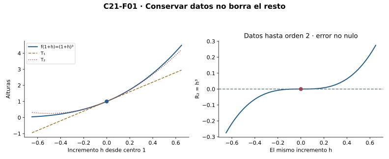
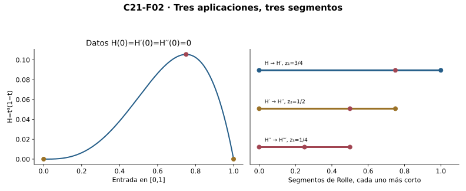
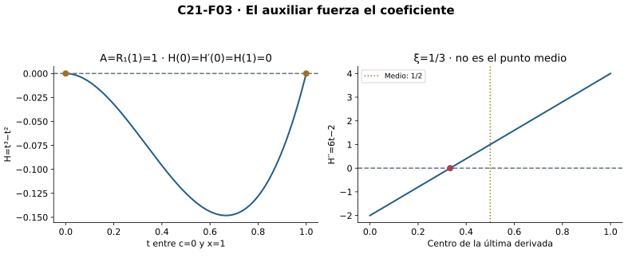
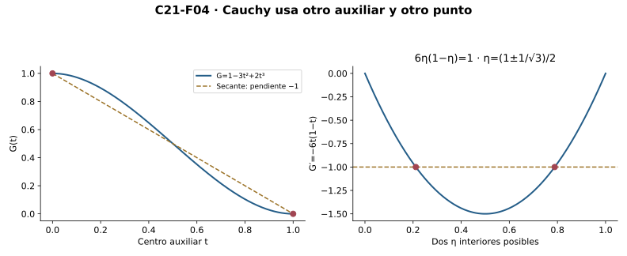
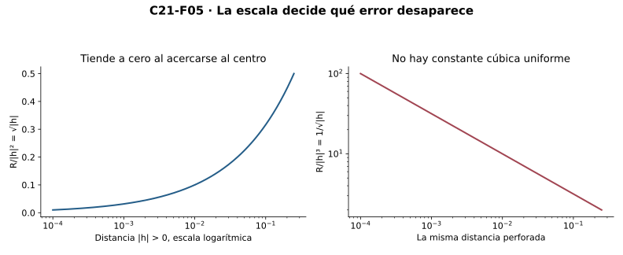
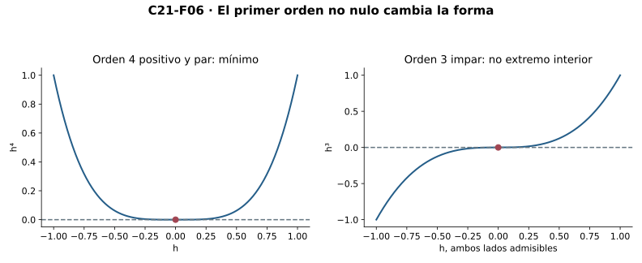
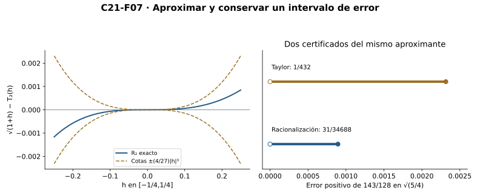
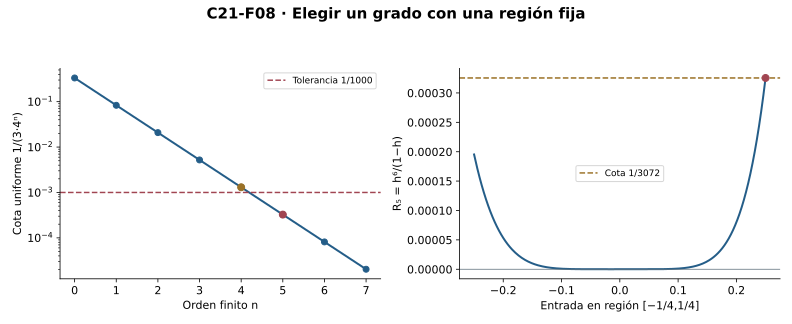

Capítulo 21 — Taylor: modelos locales y error
Índice del libro · Ejercicios de este capítulo
En el cubo centrado en uno, la recta que conserva el valor y la pendiente deja un error que podemos calcular por expansión. Añadir el término cuadrático reduce ese error a un cubo del desplazamiento. Para extender esta observación a otras funciones tendremos que relacionar los datos de un centro con lo que ocurre entre dos entradas: el polinomio se construye con las derivadas centrales, pero la garantía de error dependerá de las hipótesis disponibles en el segmento o cerca del centro.
C18 aporta diferenciabilidad y reglas; C19 Rolle, Lagrange y Cauchy; C20 bandas y alcance de convexidad. Inducción, sumas finitas, tipos, límites, continuidad y raíces son interfaces heredadas. No se usan integrales, sumas infinitas ni reglas nuevas para potencias reales generales. El polinomio vive en toda la recta, pero el error se evalúa sólo donde la función original existe.
21.1. Un polinomio para los datos de un centro
La recta de C18 conserva el valor y la primera derivada de una función en un centro. Para conservar más derivadas buscaremos un polinomio escrito en potencias del desplazamiento respecto de ese centro. Esta elección hará que, al evaluar cada derivada en él, desaparezcan todos los términos salvo uno; podremos determinar los coeficientes por separado antes de estudiar el error fuera del centro.
Fijemos \(n\ge0\) y un centro \(c\). Escribimos \(f^{(0)}=f\) y \(f^{(k+1)}=(f^{(k)})'\) donde esas derivadas existen en el dominio indicado. El factorial se define por \(0!=1\) y \((k+1)!=(k+1)k!\). Inducción demuestra su positividad. En fórmulas reales, \(k!\) abrevia su copia real positiva mediante la incrustación de naturales; no identificamos silenciosamente los dos tipos. La potencia de exponente cero es la función constante1, también en el centro.
Busquemos \(P(t)=\sum_{k=0}^n a_k(t-c)^k\). Las reglas de C18 para productos finitos dan, por inducción, que la derivada de orden \(j\) de la potencia \((t-c)^k\) es cero si \(j>k\), y es \(k!/(k-j)!\,(t-c)^{k-j}\) si \(j\le k\). En la derivada del término completo se conserva además el factor \(a_k\). Al evaluar en \(c\), las potencias positivas se anulan y sólo sobrevive el término \(k=j\), cuya potencia de exponente cero vale uno. Por tanto
\[P^{(j)}(c)=j!a_j,\qquad 0\le j\le n.\]
Para imponer \(P^{(j)}(c)=f^{(j)}(c)\) no hay elección libre: \(a_j=f^{(j)}(c)/j!\). Queda determinado el polinomio de Taylor de orden \(n\):
\[T_{n,c}f(t)=\sum_{k=0}^n\frac{f^{(k)}(c)}{k!}(t-c)^k.\]
Es el único polinomio de grado a lo sumo \(n\) que reproduce todos esos datos en el centro. «Orden \(n\)» no significa grado exactamente \(n\): el coeficiente superior puede ser cero. Para \(n=0\) sólo retenemos el valor; para \(n=1\) recuperamos la recta; para \(n=2\) aparece \(f''(c)(t-c)^2/2\). La definición usa datos finitos, no infinitas derivadas ni una suma infinita.
Para \(f(t)=t^3\) y \(c=1\), los datos son \(f(c)=1\), \(f'(c)=3\) y \(f''(c)=6\). Obtenemos \(T_{2,1}f(1+h)=1+3h+3h^2\). Al expandir \((1+h)^3\), la diferencia respecto de este polinomio es exactamente \(h^3\). En el mismo ejemplo, la recta \(1+3h\) deja \(3h^2+h^3\): incorporar el dato de segunda derivada elimina el término cuadrático del error. La identidad del cubo permite esta comparación exacta; para una función general todavía necesitamos demostrar qué queda fuera de su polinomio.
La igualdad de datos centrales tampoco determina toda una función. Para un \(n\) fijo, los polinomios \(P(t)\) y \(P(t)+A(t-c)^{n+1}\) tienen los mismos valores derivados de órdenes0 a\(n\) en \(c\), para cualquier real \(A\), pero difieren fuera del centro si \(A\ne0\). La unicidad afirmada sólo afecta a polinomios de grado a lo sumo \(n\).

Escribiremos \(R_{n,c}(x)=f(x)-T_{n,c}f(x)\) para el resto. Su dominio es el de \(f\): aunque el polinomio esté definido en toda \(\mathbb R\), la diferencia sólo tiene sentido donde existe la función original. Esta restricción acompañará tanto a las identidades exactas como a las cotas de error.
Microcontroles
Microcontrol 1
¿Qué datos conserva el polinomio de Taylor de orden \(n\)?
Ver solución del microcontrol 1
El valor y las derivadas de órdenes1 a\(n\) en el centro, si están definidos; orden0 significa el propio valor.
El centro y el orden se fijan antes de construir los coeficientes. Conservar esos datos significa igualdad de evaluaciones y derivadas allí, no igualdad de funciones en todo el dominio. El modelo puede tener grado menor que el orden solicitado si algunos coeficientes se anulan.
Microcontrol 2
¿Cuál es el valor de \(0!\) y por qué importa?
Ver solución del microcontrol 2
Es1. Su copia real positiva permite el coeficiente de orden0 y evita un denominador nulo.
La convención del factorial empieza en uno y multiplica después por naturales positivos. Todas sus copias reales son por ello positivas. En el término inicial se divide el valor central por uno, sin una singularidad artificial.
Microcontrol 3
¿Qué significa \(k!\) cuando aparece en un cociente real?
Ver solución del microcontrol 3
La copia real del factorial natural mediante la incrustación declarada; no se identifican tácitamente naturales y reales.
El factorial se construye como un natural y el coeficiente pertenece a un cálculo real. La incrustación lleva ese natural positivo al denominador real correspondiente. Declarar esta lectura justifica la división sin confundir los tipos de los objetos.
Microcontrol 4
¿Qué coeficiente corresponde a la derivada de orden \(j\)?
Ver solución del microcontrol 4
\(a_j=f^{(j)}(c)/j!\), porque \(P^{(j)}(c)=j!a_j\).
Al derivar \(j\) veces, los términos de grado menor desaparecen y los mayores conservan una potencia positiva que se anula en el centro. Sólo sobrevive el término de grado \(j\) con su factorial. Dividir por ese factor positivo determina el coeficiente de manera única.
Microcontrol 5
¿El orden \(n\) obliga a grado exactamente \(n\)?
Ver solución del microcontrol 5
No. El último coeficiente puede ser cero, y el grado sólo está acotado superiormente por\(n\).
El orden indica hasta qué datos se desea conservar, mientras el grado depende del último coeficiente no nulo. Un polinomio cuadrático puede coincidir con su Taylor de orden cuatro. No se agrega un término superior ficticio para alcanzar ese grado.
Microcontrol 6
¿Dónde está definido el polinomio y dónde el resto?
Ver solución del microcontrol 6
El polinomio está en toda la recta; el resto \(f-T_{n,c}f\) sólo en el dominio de\(f\).
La fórmula polinómica sólo usa sumas y potencias enteras y admite toda entrada real. Para formar el resto también se necesita evaluar la función original. Por ello evaluar el modelo fuera del dominio no crea una salida de la función ni un error definido allí.
Microcontrol 7
¿Qué resto tiene \(t^3\) a orden2 y centro1?
Ver solución del microcontrol 7
Con \(t=1+h\), el polinomio es \(1+3h+3h^2\) y el resto exacto es\(h^3\).
La expansión finita de \((1+h)^3\) separa los tres términos conservados y el término cúbico restante. No se estima un testigo desconocido para obtener esa identidad. La magnitud del resto se controla después mediante \(|h|^3\), con el dominio y centro fijados.
Microcontrol 8
¿Los datos centrales hasta orden \(n\) determinan una función completa?
Ver solución del microcontrol 8
No. Añadir \(A(t-c)^{n+1}\) conserva todos esos datos y puede cambiar la función fuera del centro.
La potencia añadida tiene un cero de orden al menos \(n+1\) en el centro. Todas las derivadas hasta \(n\) allí son cero, pero en una entrada distinta puede producir un cambio arbitrario mediante su coeficiente. La unicidad del modelo se refiere a polinomios de grado a lo sumo \(n\).
Ejercicios de la sección 21.1
Ejercicio 1. Los coeficientes no se eligen a ojo
Para \(P(t)=\sum_{k=0}^n a_k(t-c)^k\), demuestra \(P^{(j)}(c)=j!a_j\) y deduce existencia y unicidad del polinomio que conserva los datos de órdenes0 a\(n\).
Ver solución del ejercicio 1
Derivamos cada monomio con la regla de producto finito. Si \(j>k\), su derivada es cero; si \(j\le k\), es \(k!/(k-j)!\,(t-c)^{k-j}\). En el centro se anulan los términos con \(k>j\) y el término \(k=j\) vale \(j!\), incluida la potencia de exponente cero definida como1. Así \(P^{(j)}(c)=j!a_j\). El factorial tiene copia real positiva por inducción, luego \(a_j=f^{(j)}(c)/j!\) es el único valor posible. La suma finita con esos coeficientes existe como polinomio y cumple los datos al sustituir. La unicidad se limita a grado a lo sumo\(n\).
La derivación de la suma es finita y se utiliza sólo en monomios enteros ya legitimados. La evaluación central selecciona un único coeficiente por cada orden. Esa relación triangular prueba existencia por construcción y unicidad dentro de la clase de grado a lo sumo \(n\). Una función de grado mayor puede compartir los mismos datos.
Ejercicio 2. El cubo visto desde uno
Construye los polinomios de Taylor de órdenes1,2,3 de \(t^3\) en\(c=1\), usando\(h=t-1\). Calcula sus restos exactos.
Ver solución del ejercicio 2
Los datos son1,3,6,6 para órdenes0 a3. Por tanto \(T_1=1+3h\), \(T_2=1+3h+3h^2\) y \(T_3=1+3h+3h^2+h^3\). La expansión finita de \((1+h)^3\) da restos \(R_1=3h^2+h^3\), \(R_2=h^3\) y \(R_3=0\). Cada factorial convierte derivada en coeficiente; en orden3 se divide6 por6. Los órdenes bajos conservan sus datos aunque no igualen la función fuera del centro.
Los factoriales convierten las derivadas centrales en coeficientes de incrementos, no en los mismos números sin escala. Cada resto se obtiene restando su modelo de la expansión exacta. Aumentar el orden conserva más datos y aquí finalmente elimina el resto porque se conoce el polinomio completo.
Retorno visual. Véase C21-F01, después del argumento completo: la figura permite reconocer el mecanismo y no sustituye la prueba.
Ejercicio 3. Orden mayor que el grado
Encuentra el Taylor de orden4 de\(2-3t+t^2\) en cero y explica por qué la palabra orden no exige grado4.
Ver solución del ejercicio 3
Las derivadas centrales son2,−3,2 y luego0 para órdenes3 y4. El Taylor es \(2-3t+t^2\), pues el coeficiente cuadrático es2/2=1 y los superiores son cero. Su grado es2, menor que4. Orden4 exige conservar los datos hasta ese orden, no que el último coeficiente sea no nulo. El resto es cero porque la función ya es ese polinomio.
Las derivadas superiores son datos legítimos aunque valgan cero. Los coeficientes de esos órdenes se anulan y no cambian el grado efectivo. La igualdad exacta con la función prueba resto cero sin necesitar un punto intermedio de Lagrange.
Ejercicio 4. Mismos datos, salidas diferentes
Para\(n\) fijo y un polinomio\(P\) de grado a lo sumo\(n\), prueba que\(P+A(t-c)^{n+1}\) conserva sus datos centrales hasta orden\(n\) y puede alcanzar cualquier valor prescrito en una entrada\(x\ne c\).
Ver solución del ejercicio 4
Cada derivada de la potencia de órdenes0 a\(n\) contiene un factor positivo de grado al menos1 en\(t-c\) y se anula en\(c\). Así se conservan los datos. En\(x\ne c\), el factor \((x-c)^{n+1}\) es no cero. Para imponer una salida\(b\), tomamos \(A=(b-P(x))/(x-c)^{n+1}\). La función resultante es un polinomio y tiene valor\(b\) en\(x\). No contradice la unicidad de Taylor porque su grado puede superar\(n\).
La potencia adicional se anula junto con todas sus derivadas centrales hasta el orden fijado. En la entrada distinta su valor es no nulo y permite despejar el coeficiente libre. Se puede modificar cualquier salida fuera del centro manteniendo el modelo anterior, porque la clase resultante admite grados mayores.
Ejercicio 5. Centro, dominio y factorial
Explica los tres controles necesarios para escribir Taylor de\(1/(1-t)\) en\(c=0\) y por qué la definición del polinomio no certifica su error cerca de\(t=1\).
Ver solución del ejercicio 5
El centro0 pertenece al dominio declarado\(t<1\); las derivadas centrales usadas deben existir, lo que aquí dan las reglas del cociente e inducción. Los denominadores\(k!\) se leen como sus copias reales positivas, incluido0!=1. El polinomio puede evaluarse en cualquier real, pero el resto sólo en el dominio original. La definición únicamente iguala datos en0: para controlar el error fuera se necesita una fórmula o cota adicional. Cerca de la singularidad1, el margen del denominador puede ser arbitrariamente pequeño.
El contrato debe acreditar pertenencia del centro, existencia de los datos y lectura real de los factoriales. El polinomio definido por ellos no tiene una singularidad, pero la función sí pierde definición en uno. Una cota de error requiere controlar la región donde se comparan ambas y su distancia a esa singularidad.
21.2. Rolle se repite sin perder sus hipótesis
Para convertir coincidencias de derivadas en una identidad del resto necesitamos una herramienta de C19 repetida un número finito de veces. Sea \(x\ne c\) y \(K=[\min(c,x),\max(c,x)]\). Supongamos que hay funciones \(H_0,\ldots,H_n\) continuas en \(K\), con \(H_k'=H_{k+1}\) en su interior para \(k<n\), y que \(H_n\) también es derivable en el interior. Exijamos
\[H_k(c)=0\quad(0\le k\le n),\qquad H_0(x)=0.\]
No exigimos continuidad de \(H_n'\) ni su existencia en los bordes.
Empezamos con \(z_0=x\). Los valores \(H_0(c)=H_0(z_0)=0\), junto con continuidad en el segmento y derivabilidad en su interior, permiten aplicar Rolle y obtener un \(z_1\) estrictamente entre ambos con \(H_0'(z_1)=0\). Si \(n\ge1\), la relación \(H_0'=H_1\) convierte ese resultado en \(H_1(z_1)=0\). Como también \(H_1(c)=0\), el siguiente miembro tiene de nuevo dos valores iguales y podemos aplicar Rolle entre \(c\) y \(z_1\).
En general, al llegar al miembro \(H_k\) conservamos \(H_k(c)=H_k(z_k)=0\), con \(z_k\ne c\). La continuidad en \(K\) se restringe al nuevo subsegmento y su interior sigue dentro del interior de \(K\), donde existe la derivada requerida. Rolle proporciona entonces \(z_{k+1}\) estrictamente entre \(c\) y \(z_k\), con \(H_k'(z_{k+1})=0\). Para \(k<n\), la relación entre miembros da \(H_{k+1}(z_{k+1})=0\) y permite continuar. Cuando \(k=n\), ya hemos alcanzado la conclusión:
\[H_n'(z_{n+1})=0,\qquad z_{n+1}\text{ estrictamente entre }c\text{ y }x.\]
Se han usado \(n+1\) aplicaciones de Rolle, no \(n\). El caso \(n=0\) consiste en una sola. Si \(x<c\), todos los segmentos se ordenan mediante mínimo y máximo; los nuevos puntos siguen acercándose a \(c\) por el lado izquierdo. La derivada de una restricción interior coincide con la original, y cada subsegmento mantiene extremos distintos. Si \(x=c\), no hay segmento no degenerado y no se afirma un punto intermedio.
Cuando partimos de una función \(H\) con derivadas continuas hasta orden \(n\) en ese segmento y derivada de orden \(n+1\) en su interior, tomamos \(H_k=H^{(k)}\). Las igualdades centrales suministran un cero para cada miembro; el otro procede del paso anterior. Así puede repetirse Rolle aun cuando el último miembro derivado no sea continuo: su continuidad no interviene después de obtener el punto final.
Para seguir una cadena concreta, tomemos \(H(t)=t^3(1-t)\), \(c=0\), \(x=1\) y \(n=2\). Tenemos \(H(0)=H'(0)=H''(0)=0\) y \(H(1)=0\). Las derivadas \(H'(t)=3t^2-4t^3\), \(H''(t)=6t-12t^2\) y \(H'''(t)=6-24t\) permiten escoger \(z_1=3/4\), \(z_2=1/2\) y \(z_3=1/4\), respectivamente. Cada punto anula la derivada correspondiente y queda estrictamente entre cero y el anterior. Las coordenadas se han podido calcular porque conocemos este polinomio; el lema asegura existencia sin exigir un cálculo semejante.

Para cada \(n\) y cada \(x\) fijados, los puntos se obtienen mediante una inducción finita. No necesitamos escogerlos simultáneamente para todas las entradas o todos los órdenes. En la cadena, el cero central de cada miembro hace posible el paso siguiente, aunque los otros ceros pertenezcan a funciones derivadas diferentes.
Microcontroles
Microcontrol 9
¿Qué igualdades centrales se necesitan para Rolle repetido de orden \(n\)?
Ver solución del microcontrol 9
\(H_k(c)=0\) para \(0\le k\le n\), más \(H_0(x)=0\) con \(x\ne c\).
Las igualdades en el centro se utilizan una por cada miembro de la cadena. El cero adicional de la función inicia el primer segmento. Sin un dato central nulo del siguiente miembro no habría dos bordes iguales para continuar Rolle.
Microcontrol 10
¿Cuántas aplicaciones de Rolle produce la última derivada nula?
Ver solución del microcontrol 10
\(n+1\) aplicaciones, incluida una sola cuando\(n=0\).
El primer paso parte de \(H_0\) y el último de \(H_n\), así los índices van de cero a \(n\). La conclusión se refiere a la derivada del último miembro, de orden \(n+1\) en la cadena. En orden cero no se repite nada: se realiza un solo Rolle.
Microcontrol 11
¿Qué invariante permite continuar el paso \(k\)?
Ver solución del microcontrol 11
\(H_k(c)=H_k(z_k)=0\), con \(z_k\ne c\) y continuidad/derivabilidad en el subsegmento correspondiente.
El testigo anterior aporta el segundo cero del miembro que sigue y los datos centrales aportan el primero. Su posición estrictamente interior garantiza que no coincide con el centro. Después se vuelven a verificar continuidad de bordes y derivabilidad interior en el segmento reducido.
Microcontrol 12
¿Qué relación enlaza los miembros de la cadena?
Ver solución del microcontrol 12
\(H_k\prime=H_{k+1}\) en el interior para \(k<n\); la derivada del último miembro también debe existir interiormente.
La igualdad entre derivada de un miembro y el siguiente transmite la conclusión del paso anterior. El último paso sólo pide que exista su derivada para anularla en algún centro interior. Sin ese enlace, los ceros de funciones diferentes no formarían una inducción válida.
Microcontrol 13
¿Se pide continuidad de la derivada final?
Ver solución del microcontrol 13
No. Se necesita que exista en el interior para el último Rolle; los miembros anteriores sí son continuos sobre los segmentos.
Rolle necesita continuidad de la función a la que se aplica y existencia de su derivada en el interior. No exige continuidad de esa derivada. En la última aplicación esos papeles corresponden a \(H_n\) y \(H_n\prime\), respectivamente.
Microcontrol 14
¿Cómo se ordena el segmento si \(x<c\)?
Ver solución del microcontrol 14
Con extremos \(\min(c,x)\) y \(\max(c,x)\); los puntos sucesivos quedan entre\(c\) y el punto anterior por el lado izquierdo.
Ordenar los extremos permite aplicar el mismo enunciado a izquierda o derecha sin cambiar sus hipótesis. Cada nuevo testigo está en el interior del segmento anterior y se aproxima al centro por el lado disponible. La orientación afecta después los signos de potencias, no la validez de Rolle.
Microcontrol 15
¿Qué punto intermedio se afirma si \(x=c\)?
Ver solución del microcontrol 15
Ninguno. No hay segmento con extremos distintos y el caso se resuelve por la igualdad central.
La evaluación central de Taylor coincide con la función y el resto es cero. No hay un punto estrictamente entre dos extremos iguales ni un incremento no nulo por el que dividir. El caso se resuelve directamente antes de introducir el auxiliar con coeficiente \(A\).
Microcontrol 16
¿Se selecciona una familia infinita de testigos?
Ver solución del microcontrol 16
No. Para un orden y una entrada fijados, la inducción realiza sólo un número finito de pasos existenciales.
El número de aplicaciones está determinado por el orden natural fijo. Cada existencia se utiliza para el siguiente paso de esa lista finita. No se construye una asignación de testigos para todos los órdenes o entradas de una vez.
Ejercicios de la sección 21.2
Ejercicio 6. El invariante de Rolle repetido
Escribe una prueba por inducción finita del lema de21.2, declarando el invariante y el número de aplicaciones.
Ver solución del ejercicio 6
Ponemos \(z_0=x\). En el paso\(k\), \(H_k(c)=H_k(z_k)=0\) y\(z_k\ne c\). La restricción al segmento de esos extremos es continua, y su derivada existe interiormente y coincide con la original. Rolle da\(z_{k+1}\) estrictamente entre ambos con\(H_k\prime(z_{k+1})=0\). Si\(k<n\), la cadena convierte esa igualdad en\(H_{k+1}(z_{k+1})=0\), mientras\(H_{k+1}(c)=0\) era dato, y permite continuar. En el paso\(n\) se obtiene la derivada final nula. Hay\(n+1\) pasos, de0 a\(n\). La longitud es finita y fijada de antemano.
En cada paso el dato central nulo pertenece al nuevo miembro y el testigo anterior aporta su otro cero. La relación de derivadas transmite la conclusión y la posición estricta conserva extremos distintos. El número finito de pasos evita una selección simultánea de testigos para una familia infinita.
Ejercicio 7. Una cadena de tres puntos
Para\(H(t)=t^3(1-t)\) entre0 y1, comprueba los ceros centrales hasta orden2 y la cadena de puntos\(3/4,1/2,1/4\) de Rolle.
Ver solución del ejercicio 7
Expandimos\(H=t^3-t^4\). Sus derivadas son\(H\prime=3t^2-4t^3\), \(H\prime\prime=6t-12t^2\) y\(H^{(3)}=6-24t\). En0, \(H,H\prime,H\prime\prime\) valen0 y\(H(1)=0\). Evaluar da\(H\prime(3/4)=0\), \(H\prime\prime(1/2)=0\) y\(H^{(3)}(1/4)=0\). Se cumple\(0<1/4<1/2<3/4<1\), de modo que cada punto está entre el centro y el punto anterior. La cadena realiza tres aplicaciones para\(n=2\); sus valores exactos no son prescritos por el lema general.
Las tres anulaciones centrales preparan el orden dos y el cero en uno inicia el segmento. Los puntos explícitos satisfacen además las inclusiones estrictas requeridas por la cadena. Las cuentas verifican este ejemplo, pero el lema general sólo proporciona existencias y no prescribe esas fracciones.
Retorno visual. Véase C21-F02, después del argumento completo: la figura permite reconocer el mecanismo y no sustituye la prueba.
Ejercicio 8. Un dato central que no puede perderse
Para\(n=1\), muestra que\(H(0)=H(1)=0\) sin exigir\(H\prime(0)=0\) no garantiza un cero de\(H\prime\prime\) interior.
Ver solución del ejercicio 8
Tomamos\(H(t)=t(1-t)\). Tiene bordes0 y0, y Rolle da un cero de\(H\prime=1-2t\) en1/2. Sin embargo\(H\prime(0)=1\), no cero, y\(H\prime\prime=-2\) no se anula en el interior. Falta el borde central nulo del segundo miembro de la cadena, así no se puede repetir Rolle entre0 y1/2. La igualdad de valores de la función no basta para toda la cadena.
La primera aplicación de Rolle se mantiene válida porque los bordes de \(H\) son iguales. La segunda necesitaría igualdad de valores de \(H\prime\) entre el centro y el testigo obtenido, y esa premisa falta. La segunda derivada constante no nula muestra que la conclusión no puede repararse sólo con los ceros iniciales.
Ejercicio 9. Rolle hacia la izquierda
Aplica el esquema de\(n=1\) a\(H(t)=t^2(t+1)\) entre\(c=0\) y\(x=-1\). Calcula una cadena de testigos y explica la orientación.
Ver solución del ejercicio 9
Tenemos\(H(0)=H\prime(0)=0\) y\(H(-1)=0\). La primera derivada\(3t^2+2t=t(3t+2)\) se anula interiormente en\(z_1=-2/3\). La segunda\(6t+2\) se anula en\(z_2=-1/3\), estrictamente entre−2/3 y0. La cadena cumple\(-1<-2/3<-1/3<0\): se acerca al centro por la izquierda. Cada aplicación usa el segmento con extremos ordenados mediante mínimo y máximo; no se invierte una hipótesis de continuidad o interioridad.
El segmento se escribe con extremos ordenados aunque el avance hacia el centro sea de izquierda a derecha. Los dos testigos permanecen interiores en sus respectivos subsegmentos. La fórmula de las derivadas confirma cada anulación y no se cambia el sentido de una hipótesis por tener incremento negativo.
Ejercicio 10. Qué continuidad consume cada paso
Distingue las hipótesis de continuidad de\(H_0,\ldots,H_n\) y la hipótesis sobre\(H_n\prime\). Explica por qué no hace falta una familia infinita de puntos.
Ver solución del ejercicio 10
Cada\(H_k\) se usa como función de un Rolle sobre un subsegmento, así necesita continuidad incluyendo sus extremos. Para\(k<n\) su derivabilidad interior y la igualdad\(H_k\prime=H_{k+1}\) permiten enlazar el próximo miembro. El último\(H_n\) necesita derivabilidad interior, pero Rolle no exige continuidad de\(H_n\prime\) ni su existencia en bordes. El proceso fija\(n\) y construye sólo\(n+1\) existencias, mediante inducción finita; no define un selector para todas las entradas o todos los órdenes simultáneamente.
Los papeles de función y derivada cambian al pasar al siguiente miembro. Cada nueva función de Rolle debe tener continuidad en sus dos bordes, pero la última derivada no necesita ese control como función de otro paso. La prueba declara un orden fijo y termina antes de exigir una continuidad adicional no prevista.
21.3. Forzar el resto: la fórmula de Lagrange
Tomemos una función \(f\) derivable hasta orden \(n+1\) en un intervalo abierto \(J\), y un centro \(c\) y una entrada \(x\) de \(J\). La existencia de cada derivada hasta orden \(n+1\) hace continuas a las funciones \(f,\ldots,f^{(n)}\) sobre cada segmento interior. No se supone continuidad de \(f^{(n+1)}\).
Si \(x=c\), la construcción da directamente \(R_{n,c}(c)=0\). Para \(x\ne c\) queremos que una función auxiliar tenga ese mismo cero central con todas las derivadas hasta orden \(n\), y además se anule en \(x\). Restar el polinomio de Taylor ya consigue las condiciones centrales. Podemos imponer la condición restante restando un múltiplo de \((t-c)^{n+1}\), pues esa potencia y sus primeras \(n\) derivadas se anulan en \(c\). El coeficiente necesario es
\[A=\frac{R_{n,c}(x)}{(x-c)^{n+1}}.\]
El denominador es no nulo y la elección del numerador hará que la nueva diferencia se anule en \(x\). Fijamos esta entrada durante toda la prueba; \(A\) puede cambiar cuando cambie \(x\). Definamos en el segmento que une \(c\) y \(x\)
\[H(t)=f(t)-T_{n,c}f(t)-A(t-c)^{n+1}.\]
Al sustituir \(t=x\) obtenemos \(H(x)=0\). En el centro, la coincidencia de datos de Taylor y el exponente \(n+1\) dan \(H^{(k)}(c)=0\) para \(0\le k\le n\). La hipótesis de derivabilidad hace continuos a los miembros hasta orden \(n\) y proporciona sus relaciones de derivación en el interior. Se cumplen así todas las condiciones del lema anterior, que da un \(\xi\) estrictamente entre \(c\) y \(x\) con \(H^{(n+1)}(\xi)=0\).
La derivada de orden \(n+1\) del polinomio de Taylor es cero; la de \((t-c)^{n+1}\) es la constante \((n+1)!\). Entonces
\[0=f^{(n+1)}(\xi)-A(n+1)!.\]
Como \((n+1)!\) es positivo, podemos despejar \(A\) en esta igualdad. Sustituir después su definición y multiplicar por \((x-c)^{n+1}\) devuelve el resto que habíamos incorporado al auxiliar:
\[f(x)=T_{n,c}f(x)+\frac{f^{(n+1)}(\xi)}{(n+1)!}(x-c)^{n+1}.\]
Es Taylor finito con resto de Lagrange. Para \(n=0\) recupera el valor medio de C19; para \(n=1\) convierte la diferencia respecto de la tangente en una segunda derivada intermedia por \((x-c)^2/2\). El testigo puede depender de \(f,n,c,x\) y no tiene por qué ser único o el punto medio. No se lo usa como una constante al variar esos datos.
La prueba también admite un contrato sobre un segmento cerrado: una cadena dada \(f_0,\ldots,f_n\) continua incluyendo los bordes, con \(f_k'=f_{k+1}\) en el interior, y \(f_n'\) existente en todo el interior. El polinomio usa los valores \(f_k(c)\) de esas extensiones continuas; la derivada final sólo se evalúa en \(\xi\). No se presupone un operador de derivación en los bordes. Las identidades para \(H_k\) y Rolle son las mismas. Este contrato incluye centros fronterizos y no pide la derivada final en el propio centro.

Volvamos al cubo con centro \(1\) y orden \(2\). Su tercera derivada vale \(6\) en toda la recta, por lo que la fórmula da \(6h^3/3!=h^3\), el resto exacto de §21.1. Cualquier punto interior sirve en este caso: todos producen el mismo valor de derivada. Lo mismo ocurre para el cuadrado con orden \(1\), cuya segunda derivada es constante.
Microcontroles
Microcontrol 17
¿Qué coeficiente fuerza la anulación del auxiliar en \(x\ne c\)?
Ver solución del microcontrol 17
\(A=R_{n,c}(x)/(x-c)^{n+1}\); el incremento no nulo permite dividir.
El coeficiente se diseña para que el término añadido reproduzca exactamente el resto en la entrada fijada. La potencia del incremento es no nula porque \(x\ne c\). La división no se formula para el centro, cuyo error se comprueba por separado.
Microcontrol 18
¿Qué función auxiliar se usa en la prueba de Lagrange?
Ver solución del microcontrol 18
\(H(t)=f(t)-T_{n,c}f(t)-A(t-c)^{n+1}\).
La auxiliar conserva los datos centrales nulos del resto y añade un cero en la entrada \(x\). Su potencia extra no altera las derivadas centrales hasta el orden fijado. Estas son las condiciones que permiten usar Rolle repetido en vez de suponer la fórmula del resto.
Microcontrol 19
¿Por qué se anulan sus datos centrales hasta orden \(n\)?
Ver solución del microcontrol 19
Taylor conserva los datos y la potencia adicional tiene todas esas derivadas nulas en\(c\).
Cada derivada del término extra hasta orden \(n\) mantiene una potencia positiva de \(t-c\). En el centro se anula y el polinomio conservado cancela los otros datos de \(f\). Esa verificación debe hacerse para toda la cadena, no sólo para el valor.
Microcontrol 20
¿Qué igualdad deja el último Rolle?
Ver solución del microcontrol 20
\(f^{(n+1)}(\xi)-A(n+1)!=0\), pues el polinomio de orden\(n\) ya tiene derivada\(n+1\) nula.
La derivada de orden \(n+1\) del modelo es cero por su grado. La potencia añadida produce la constante factorial y Rolle fuerza la igualdad indicada. Como el factorial es positivo, se despeja \(A\) y se sustituye en la definición del resto.
Microcontrol 21
¿Qué posición tiene \(\xi\)?
Ver solución del microcontrol 21
Está estrictamente entre\(c\) y\(x\), para\(x\ne c\); no se predetermina como punto medio.
El lema produce un testigo dentro de los segmentos sucesivamente reducidos, todos contenidos entre los extremos originales. Puede depender de la entrada y del orden y no tiene una ubicación universal. El cubo a orden uno da un ejemplo donde el testigo no es el medio.
Microcontrol 22
¿De qué datos puede depender el testigo?
Ver solución del microcontrol 22
De la función, el orden, el centro y la entrada; no se conserva como una constante al variarlos.
La existencia se obtiene para los datos de una aplicación concreta. Variarlos cambia el auxiliar y los segmentos usados, por lo que también puede cambiar el testigo. Para una cota uniforme se controla cualquier ubicación posible, sin elegirlos simultáneamente.
Microcontrol 23
¿Es necesaria continuidad de \(f^{(n+1)}\) para la prueba por Rolle?
Ver solución del microcontrol 23
No. Basta su existencia interior y la continuidad de los miembros hasta orden\(n\) sobre el segmento.
Los miembros anteriores se usan como funciones de Rolle y deben ser continuos sobre sus segmentos. La última derivada sólo se evalúa en un centro interior donde existe. No se toma un máximo suyo ni se pasa al límite de sus valores para esta fórmula.
Microcontrol 24
¿Qué se usa como dato central en el contrato cerrado?
Ver solución del microcontrol 24
Los valores de las extensiones continuas dadas \(f_k(c)\); no se presupone derivar en un borde.
Las extensiones continuas forman parte del contrato y proporcionan valores centrales bien definidos. Las relaciones de derivación se exigen en los interiores pertinentes. Así un centro de frontera puede tener datos extendidos sin una última derivada finita allí.
Ejercicios de la sección 21.3
Ejercicio 11. El auxiliar que obliga a la igualdad
Demuestra Taylor–Lagrange a orden\(n\) mediante\(H=f-T_{n,c}f-A(t-c)^{n+1}\), justificando cada división y el caso\(x=c\).
Ver solución del ejercicio 11
Si\(x=c\), el resto es0 por los datos centrales y no se pide testigo interior. Si\(x\ne c\), definimos\(A=R(x)/(x-c)^{n+1}\), con denominador no cero. Esto hace\(H(x)=0\). Los datos de Taylor y la potencia de grado\(n+1\) dan\(H^{(k)}(c)=0\) para\(k\le n\). Bajo el contrato diferencial, los primeros miembros son continuos y sus derivadas enlazan; Rolle repetido da\(H^{(n+1)}(\xi)=0\). La derivada final del polinomio es0 y la de la potencia es\((n+1)!\), así\(A=f^{(n+1)}(\xi)/(n+1)!\). Este factorial real es positivo, por lo que se puede despejar. Sustituimos\(A\) para obtener la fórmula.
El caso central se separa antes de introducir la división por el incremento. En el caso perforado, el auxiliar se diseña para conservar toda la cadena de ceros centrales y anularse en la entrada final. La última derivada nula determina su coeficiente libre. Sustituirlo produce la fórmula sin asumirla durante la construcción.
Ejercicio 12. Un testigo que no es el medio
Para\(f(t)=t^3\), centro0, entrada1 y Taylor de orden1, calcula el testigo de Lagrange y compáralo con el punto medio.
Ver solución del ejercicio 12
\(T_{1,0}=0\), así\(R(1)=1\). La fórmula dice\(1=f\prime\prime(\xi)/2=6\xi/2=3\xi\), de donde\(\xi=1/3\). Pertenece estrictamente a\((0,1)\) pero no es el medio1/2. Este caso tiene un único testigo porque la segunda derivada es estrictamente creciente. No se infiere unicidad del teorema general.
La segunda derivada del cubo cambia con el testigo, por lo que la ecuación del resto identifica aquí una fracción concreta. El medio produciría un valor diferente y no satisface la igualdad. Unicidad en este ejemplo procede de esa ecuación, no de una afirmación general del teorema.
Retorno visual. Véase C21-F03, después del argumento completo: la figura permite reconocer el mecanismo y no sustituye la prueba.
Ejercicio 13. Una derivada constante deja muchos testigos
Para\(t^3\) a orden2 y centro1, muestra que cualquier punto interior entre1 y\(x\ne1\) verifica el resto. ¿Qué demuestra sobre la unicidad?
Ver solución del ejercicio 13
La expansión exacta da\(R=(x-1)^3\). La tercera derivada es6 en cada punto, de modo que\([f^{(3)}(\xi)/3!](x-1)^3=(x-1)^3\) para cualquier\(\xi\) estrictamente interior. Hay infinitos puntos posibles en ese segmento y ninguna unicidad. El teorema garantiza uno; una fórmula constante puede hacer válidos todos.
La tercera derivada constante hace que el factor de Lagrange sea siempre uno después de dividir por el factorial. Por ello cualquier testigo interior reproduce el mismo resto cúbico. La fórmula puede ser exacta y admitir muchos testigos a la vez. Existencia no equivale a elección única.
Ejercicio 14. Un centro fronterizo sin última derivada
En\([0,1]\), usa\(f(t)=t^{5/2}=t^2\sqrt t\) para Taylor de orden2 y centro0 mediante el contrato cerrado. Verifica los miembros continuos y explica qué pasa con la tercera derivada en el borde.
Ver solución del ejercicio 14
Los miembros son\(f_0=t^2\sqrt t\), \(f_1=(5/2)t\sqrt t\) y\(f_2=(15/4)\sqrt t\), con valores0 en el borde. Son continuos sobre\([0,1]\) y las relaciones de derivación se cumplen en\((0,1)\). La derivada\(f_2\prime=(15/8)/\sqrt t\) existe interiormente aunque no es finita en0. El contrato cerrado legitima Taylor de orden2 para\(x>0\), usando los valores centrales dados; la derivada final se evalúa sólo en un testigo interior. No se obtiene por eso una cota uniforme de tercera derivada cerca de0.
Los tres miembros dados tienen límites centrales cero y proporcionan las extensiones continuas requeridas por el contrato cerrado. Sus relaciones de derivación se verifican en entradas positivas. La última derivada sólo debe existir en el testigo interior y no tiene por qué extenderse finitamente al borde. Su crecimiento cerca de cero impide una barrera uniforme allí.
Ejercicio 15. El caso de orden cero
Reduce Taylor–Lagrange de orden0 al valor medio de C19 y señala las hipótesis que siguen siendo necesarias.
Ver solución del ejercicio 15
El polinomio es\(T_{0,c}=f(c)\) y1!=1, de modo que\(f(x)-f(c)=f\prime(\xi)(x-c)\). Para\(x\ne c\) esto es exactamente Lagrange sobre el segmento. Se conserva continuidad incluyendo ambos extremos y derivabilidad interior; el carácter intervalar asegura que el segmento está en el dominio. Para\(x=c\) hay igualdad de valores sin testigo entre extremos coincidentes. La reducción no elimina ninguna de esas condiciones.
El factorial y el incremento reducen la fórmula a la igualdad de valor medio, pero conservan sus condiciones de dominio. Un segmento no degenerado necesita continuidad de bordes y derivabilidad interior. En el centro coincidente el resto se anula directamente y no se añade un testigo inexistente.
21.4. Un punto desconocido, una cota verificable
La fórmula exacta contiene un punto desconocido. Para certificar error conviene eliminarlo mediante una cota que controle todas sus ubicaciones posibles. Bajo el contrato anterior, si \(|f^{(n+1)}(t)|\le M\) en todo el interior del segmento, con \(M\ge0\), obtenemos
\[|R_{n,c}(x)|\le\frac{M}{(n+1)!}|x-c|^{n+1}.\]
Para \(x=c\) los dos lados son cero; para \(x\ne c\) aplicamos la cota en un testigo suministrado por Lagrange. No hace falta que la derivada final alcance un máximo o sea continua. Si \(M=0\), el resto es cero y no se divide por \(M\).
Fijemos ahora una región \([c-\rho,c+\rho]\), con \(\rho>0\), donde se cumpla el contrato anterior y una misma \(M\) controle la derivada final en su interior. Para cada entrada \(x\) de la región, el punto intermedio queda dentro de ella y \(|x-c|\le\rho\). Por tanto \(M\rho^{n+1}/(n+1)!\) acota simultáneamente todos los errores. La cota universal de la derivada se establece antes de elegir la entrada y su testigo; así la conclusión no depende de conocerlos ni de escoger una familia de puntos intermedios.
Otra forma exacta del resto se obtiene dejando variar el centro del polinomio auxiliar. Bajo el contrato abierto de §21.3, fijemos \(x\ne c\) y consideremos
\[G(t)=f(x)-\sum_{k=0}^n\frac{f^{(k)}(t)}{k!}(x-t)^k.\]
En \(t=x\), el término de grado cero da \(G(x)=0\); en \(t=c\) tenemos \(G(c)=R_{n,c}(x)\). Al derivar el término de índice \(k\), aparecen una parte que deriva \(f^{(k)}(t)\) y, para \(k\ge1\), otra que deriva \((x-t)^k\). Esta última es \(-f^{(k)}(t)(x-t)^{k-1}/(k-1)!\) y cancela con la primera parte del índice \(k-1\). Sólo queda la parte que deriva el coeficiente del término de índice \(n\). Como la suma se resta en \(G\), obtenemos
\[G'(t)=-\frac{f^{(n+1)}(t)}{n!}(x-t)^n.\]
Para \(n=0\) no hay términos que cancelar y la fórmula se reduce a \(G'=-f'\). En cualquier orden, el contrato abierto garantiza continuidad de \(G\) en el segmento y derivabilidad en su interior. Lagrange aplicado a \(G\), o Cauchy de C19 con la segunda función \(t\), da un \(\eta\) estrictamente entre \(c\) y \(x\) para el que \(G(x)-G(c)=G'(\eta)(x-c)\). Sustituir los valores de borde y la derivada conduce a
\[R_{n,c}(x)=\frac{f^{(n+1)}(\eta)}{n!}(x-\eta)^n(x-c).\]
Ésta es la forma de Cauchy del resto. Los signos negativos de \(G(x)-G(c)=-R_{n,c}(x)\) y de \(G'\) se cancelan. Para \(n=0\), la potencia de exponente cero vale uno y no hay ningún cociente nulo. Como \(|x-\eta|\le|x-c|\), una cota \(|f^{(n+1)}|\le M\) en el interior da \(|R|\le M|x-c|^{n+1}/n!\). Con esa misma cota constante, Lagrange ofrece un denominador factorial mayor cuando \(n\ge1\). Las dos identidades son exactas y pueden usar puntos intermedios diferentes.
Si \(m\le f^{(n+1)}\le M\), el coeficiente \(R/(x-c)^{n+1}\) de Lagrange está entre \(m/(n+1)!\) y \(M/(n+1)!\). Para transformarlo en una banda del resto hay que atender al signo de \((x-c)^{n+1}\). Si es negativo, el orden de las cotas se invierte. Una cota absoluta evita este cambio; una banda firmada conserva información direccional.

Con \(n=1\), el factor \((x-c)^2\) es no negativo y las cotas de la segunda derivada recuperan las bandas cuadráticas de C20. Con \(n=2\) y tercera derivada positiva, el cubo del desplazamiento hace positivo el resto a la derecha y negativo a la izquierda. La banda firmada informa de qué lado del aproximante se encuentra la función, además de controlar la magnitud de la diferencia.
Microcontroles
Microcontrol 25
¿Qué cota elimina el testigo de Lagrange?
Ver solución del microcontrol 25
Una cota \(|f^{(n+1)}|\le M\) válida en todo el interior donde puede estar el testigo.
El testigo tiene ubicación desconocida pero pertenece a la región donde vale la barrera. Tomar magnitudes en la fórmula y sustituir esa barrera elimina la dependencia del punto. Una muestra particular de la derivada no justificaría ese paso para todos los testigos.
Microcontrol 26
¿Qué hacer si \(M=0\)?
Ver solución del microcontrol 26
La cota obliga al resto a ser cero; no se divide por\(M\).
La desigualdad absoluta del resto se vuelve \(|R|\le0\) y fuerza igualdad exacta entre función y modelo en la región acreditada. El radio no debe calcularse dividiendo por una barrera nula. El caso central también cumple igualdad por los datos conservados.
Microcontrol 27
¿Qué número controla todos los errores si \(|x-c|\le\rho\)?
Ver solución del microcontrol 27
\(M\rho^{n+1}/(n+1)!\), siempre que la misma cota de derivada valga en toda la región.
La distancia máxima a \(c\) domina la potencia que aparece en todos los restos de la región. La misma barrera de derivada debe proteger cada subsegmento usado. Se obtiene una cota para todas las entradas antes de conocerlas, sin identificar sus testigos.
Microcontrol 28
¿Qué función permite derivar telescópicamente la forma de Cauchy?
Ver solución del microcontrol 28
\(G(t)=f(x)-\sum_{k=0}^n f^{(k)}(t)(x-t)^k/k!\), con\(x\) fijado.
En esta auxiliar la entrada final \(x\) permanece fija y las derivadas de la función se evalúan en el argumento variable \(t\). La suma es finita y puede derivarse término a término. Su estructura reserva cancelaciones entre derivadas de coeficientes y de potencias.
Microcontrol 29
¿Cuál es su derivada después de cancelar términos?
Ver solución del microcontrol 29
\(G\prime(t)=-f^{(n+1)}(t)(x-t)^n/n!\).
Derivar la potencia introduce un signo menos y baja un grado, cancelando el término siguiente que deriva a la función. Sólo queda el término superior sin compañero. El signo exterior de \(G\) determina el signo negativo final de esa expresión.
Microcontrol 30
¿Qué forma tiene el resto de Cauchy?
Ver solución del microcontrol 30
\(R=f^{(n+1)}(\eta)(x-\eta)^n(x-c)/n!\), con\(\eta\) estrictamente interior.
Aplicar valor medio a \(G\) relaciona sus bordes, cero y resto, con su derivada interior. Sustituir el telescopaje proporciona el factor indicado. Las potencias y el factorial difieren de Lagrange, por lo que las cotas de ambas formas deben calcularse por separado.
Microcontrol 31
¿Los testigos de Lagrange y Cauchy tienen que coincidir?
Ver solución del microcontrol 31
No. Son existencias obtenidas de auxiliares diferentes.
Lagrange repetido y el telescopaje de Cauchy construyen funciones auxiliares diferentes. Cada una produce su propia existencia interior. Incluso para la misma función, centro, orden y entrada pueden tener testigos distintos, como muestra el cubo.
Microcontrol 32
¿Qué ocurre al multiplicar la banda de coeficientes por un incremento elevado negativo?
Ver solución del microcontrol 32
Se invierte el orden de las cotas; una banda firmada exige controlar paridad y lado del centro.
El factorial conserva signo positivo, pero la potencia del incremento puede ser negativa si su exponente es impar y la entrada está a la izquierda. Multiplicar entonces invierte el orden de la banda. La cota absoluta evita esa orientación, mientras la firmada conserva información adicional de signo.
Ejercicios de la sección 21.4
Ejercicio 16. Una cota que no necesita máximo
Deriva la cota absoluta de resto desde Lagrange con\(|f^{(n+1)}|\le M\). Incluye\(x=c\) y\(M=0\) y explica por qué no se requiere derivada final continua.
Ver solución del ejercicio 16
Para\(x\ne c\), tomamos valores absolutos en\(R=f^{(n+1)}(\xi)(x-c)^{n+1}/(n+1)!\) y aplicamos la cota universal en\(\xi\). Resulta\(|R|\le M|x-c|^{n+1}/(n+1)!\). Si\(x=c\), ambos lados son0. Si\(M=0\), la desigualdad fuerza\(R=0\) sin dividir por\(M\). Una cota suministrada controla todos los valores posibles del testigo; no se necesita obtenerla como máximo alcanzado ni presuponer continuidad de la derivada final.
La barrera de la derivada final se declara antes del testigo y sirve para cualquiera de sus posiciones admisibles. Tomar magnitudes produce una cota no estricta sin pedir que la barrera se alcance. Los casos central y de barrera cero se verifican directamente. Así no se usa continuidad de la última derivada para fabricar un máximo.
Ejercicio 17. La cancelación de Cauchy
Calcula la derivada de\(G(t)=f(x)-\sum_{k=0}^n f^{(k)}(t)(x-t)^k/k!\) con\(x\) fijado y deduce su forma de resto.
Ver solución del ejercicio 17
Derivamos la suma finita. La parte que deriva\(f^{(k)}\) es\(\sum_{k=0}^n f^{(k+1)}(t)(x-t)^k/k!\); la que deriva la potencia es\(-\sum_{k=1}^n f^{(k)}(t)(x-t)^{k-1}/(k-1)!\). Tras reindexar la segunda, se cancelan todos salvo el término superior de la primera. Como\(G\) es negativo de la suma más una constante,\(G\prime=-f^{(n+1)}(t)(x-t)^n/n!\). Se tiene\(G(x)=0\) y\(G(c)=R\). Lagrange sobre\(G\) da\(-R=G\prime(\eta)(x-c)\); sustituir produce\(R=f^{(n+1)}(\eta)(x-\eta)^n(x-c)/n!\).
La entrada \(x\) permanece fija al derivar respecto de \(t\). La cancelación se verifica reindexando dos sumas finitas, con un único término superior restante. Después se auditan las condiciones de valor medio para \(G\). Sus valores de borde permiten obtener el resto con su signo correcto.
Retorno visual. Véase C21-F04, después del argumento completo: la figura permite reconocer el mecanismo y no sustituye la prueba.
Ejercicio 18. Una banda que cambia de orientación
Si\(2\le f^{(3)}\le6\) entre\(c\) y\(x\), escribe las bandas firmadas para el resto de orden2 cuando\(x>c\) y cuando\(x<c\).
Ver solución del ejercicio 18
El coeficiente\(R/(x-c)^3\) queda entre2/6=1/3 y6/6=1. Si\(x>c\), la potencia es positiva y\((x-c)^3/3\le R\le(x-c)^3\). Si\(x<c\), la potencia es negativa y se invierte el orden:\((x-c)^3\le R\le(x-c)^3/3\). En el centro\(R=0\). En ambos lados la cota absoluta\(|R|\le|x-c|^3\) sigue siendo válida, pero la banda firmada retiene el signo.
El intervalo de coeficientes se obtiene dividiendo por el factorial positivo. La potencia cúbica conserva o invierte la orientación según el lado de la entrada. En el centro no se divide y el resto es cero. La banda firmada aporta información de signo que se pierde al tomar sólo magnitudes.
Ejercicio 19. Testigos diferentes para el mismo error
Para\(t^3\), centro0, entrada1 y orden1, encuentra un testigo de Cauchy y compáralo con el de Lagrange. Compara sus cotas con\(|f\prime\prime|\le6\).
Ver solución del ejercicio 19
El resto es1. Lagrange dio\(\xi=1/3\). Cauchy exige\(1=6\eta(1-\eta)\); las soluciones\(\eta=(1\pm1/\sqrt3)/2\) pertenecen a\((0,1)\) y ambas sirven. Ninguna es1/3. Con\(M=6\), Lagrange da\(|R|\le6/2=3\), mientras la estimación constante de Cauchy da\(|R|\le6/1=6\). Ambas cotas son correctas aunque poco ajustadas frente al error exacto1; sus puntos y factores no se intercambian.
Las auxiliares distintas producen ecuaciones diferentes para sus testigos. Resolverlas y comprobar interioridad acredita sus ubicaciones en este ejemplo. Las cotas resultantes pueden ser poco ajustadas y seguir siendo válidas. No se intercambian los factores de una fórmula con los puntos de la otra.
Ejercicio 20. Una región antes de una entrada
Supón\(|f^{(n+1)}|\le M\) en el interior de\([c-\rho,c+\rho]\) bajo el contrato cerrado. Demuestra un control uniforme y explica por qué una muestra de esa derivada no lo sustituye.
Ver solución del ejercicio 20
Para cada entrada\(x\) del segmento, la prueba de Lagrange se aplica a su subsegmento con\(c\). Su testigo pertenece al interior de la región completa, donde vale la misma\(M\). Así\(|R(x)|\le M|x-c|^{n+1}/(n+1)!\le M\rho^{n+1}/(n+1)!\). El caso central es0. La cota se eligió antes de\(x\) y sirve para todas las entradas, sin seleccionar sus testigos simultáneamente. Una muestra finita sólo acota valores muestreados, no cualquier ubicación interior que puede producir el teorema.
Para cada entrada el segmento que la une al centro está dentro de la región protegida. La misma barrera sirve para cualquier testigo interior de cualquiera de esos segmentos. La distancia máxima \(\rho\) convierte el control puntual en uno común. No se eligen simultáneamente testigos ni se infiere la barrera de una muestra finita.
21.5. Peano: lo que desaparece al cambiar de escala
La cota anterior gasta una derivada adicional. Existe una conclusión local bajo menos información: para \(n\ge1\), si \(f\) tiene derivadas hasta orden \(n-1\) en un intervalo abierto alrededor de \(c\), y la función \(f^{(n-1)}\) es derivable en \(c\), entonces
\[R_{n,c}(c+h)=o(|h|^n)\qquad(h\to0).\]
Para \(n=1\) la hipótesis significa solamente que \(f\) es derivable en \(c\); no pide derivabilidad en otros centros. Para \(n\ge2\) las derivadas inferiores existen en un entorno, pero la de orden \(n\) se exige sólo en el centro. El símbolo \(o\) abrevia la condición: para cada \(\varepsilon>0\) existe \(\delta>0\) tal que
\[0<|h|<\delta\ \Longrightarrow\ |R_{n,c}(c+h)|<\varepsilon|h|^n.\]
El radio se toma suficientemente pequeño para mantener \(c+h\) en el dominio. La forma de Peano controla el error después de dividirlo por \(|h|^n\): para cualquier margen positivo acaba quedando por debajo de él. Esta conclusión no proporciona por sí sola una constante para \(|h|^{n+1}\) ni un radio numérico calculable.
La demostraremos por inducción. Para \(n=1\), el cociente del resto lineal por \(h\) tiende a cero por la definición de derivada en \(c\); tomar valores absolutos y multiplicar por \(|h|\) da la afirmación. Para \(n\ge2\), pongamos \(H=f-T_{n,c}f\). Se tiene \(H^{(k)}(c)=0\) para \(0\le k\le n\). La función \(H'\) cumple las hipótesis de Peano de orden \(n-1\): dispone de derivadas hasta orden \(n-2\) en un entorno y su derivada de ese orden es derivable en \(c\). Todos sus datos centrales hasta orden \(n-1\) son cero. La hipótesis inductiva da entonces
\[H'(c+u)=o(|u|^{n-1}).\]
Para pasar de esta estimación de \(H'\) a la de \(H\), compararemos sus incrementos con los de la potencia de orden \(n\). Fijada \(\varepsilon>0\), elegimos un radio dentro del dominio donde \(|H'(c+u)|<n\varepsilon|u|^{n-1}\) para toda entrada perforada. El factor \(n\) compensará la derivada de la potencia. Si \(0<|h|\) está dentro del radio, Cauchy de C19 aplicado entre \(c\) y \(c+h\) a \(H(t)\) y \((t-c)^n\) proporciona un \(\xi\) interior y la identidad
\[\frac{H(c+h)}{h^n}= \frac{H'(\xi)}{n(\xi-c)^{n-1}}.\]
Para \(n\ge2\), \(H'\) existe en un entorno, de modo que \(H\) es continua en el segmento y derivable en su interior; la potencia tiene ambas propiedades. Su incremento es \(h^n\ne0\) y su derivada interior \(n(\xi-c)^{n-1}\) tampoco se anula, porque \(\xi\ne c\). Podemos, pues, escribir el cociente mostrado. Además \(0<|\xi-c|<|h|\), de manera que la cota inductiva se aplica en \(\xi\). Al tomar valores absolutos y dividir por \(n|\xi-c|^{n-1}\) obtenemos un número menor que \(\varepsilon\). Esto prueba el paso sin pedir una derivada de orden \(n+1\) ni continuidad de la derivada de orden \(n\) en un entorno.
Para \(n=0\), la afirmación \(f(c+h)-f(c)=o(1)\) es continuidad en \(c\) y se trata separadamente. Tampoco se deriva un resto pequeño: de \(r(h)=o(|h|^n)\) no se puede inferir una fórmula para \(r'(h)\) sin hipótesis adicionales.
La función \(f(h)=h^2\sqrt{|h|}\) permite distinguir esta conclusión de una cota cúbica. Fuera de cero, las reglas de producto y de raíz aplicadas en cada lado dan \(f'(h)=(5/2)\operatorname{sgn}(h)|h|^{3/2}\) y \(f''(h)=(15/4)\sqrt{|h|}\). En cero, el cociente de \(f(h)-f(0)\) por \(h\) es \(h\sqrt{|h|}\) y tiende a cero, por lo que \(f'(0)=0\). A su vez, el cociente de \(f'(h)-f'(0)\) por \(h\) es \((5/2)\sqrt{|h|}\) y también tiende a cero: \(f''(0)=0\). El polinomio de orden \(2\) es, por tanto, cero, y los dos errores normalizados son
\[\frac{f(h)}{|h|^2}=\sqrt{|h|}\to0,\qquad \frac{f(h)}{|h|^3}=\frac1{\sqrt{|h|}}.\]
El primer cociente tiende a cero y acredita Peano de orden \(2\). El segundo crece sin cota al acercarse al centro, por lo que ninguna constante finita \(C\) puede hacer \(|f(h)|\le C|h|^3\) en un radio. La tercera derivada existe fuera de cero y no está acotada cerca de él. El contrato cerrado de Lagrange permite obtener testigos en cada segmento unilateral, ya que \(f,f',f''\) son continuas hasta cero; esos testigos no proporcionan una cota uniforme de la tercera derivada.

En este ejemplo el error absoluto tiende a cero, pero sólo una de las dos normalizaciones desaparece. La figura representa esas identidades para distancias positivas al centro. Acercar la vista a la curva no sustituye la estimación que ha de controlar todas las entradas de un radio.
Microcontroles
Microcontrol 33
¿Qué significa \(R(c+h)=o(|h|^n)\)?
Ver solución del microcontrol 33
Para cada\(\varepsilon>0\) hay un radio que hace\(|R(c+h)|<\varepsilon|h|^n\) en todas las entradas perforadas de ese radio.
La comparación normalizada se formula sólo con incrementos no nulos, pues su escala debe ser positiva para dividir. El radio responde a la tolerancia y después controla todas las entradas admisibles. No se afirma una tasa fija del siguiente orden.
Microcontrol 34
¿Qué caso de Peano corresponde a\(n=1\)?
Ver solución del microcontrol 34
La definición de derivada en el centro; no exige derivabilidad de la función en otros centros.
El resto de orden uno es la diferencia respecto del modelo afín de la derivada. Su razón por el incremento tiende a cero por definición. Una función puede cumplir esa prueba en el centro aunque no sea derivable en los otros puntos de una vecindad.
Microcontrol 35
¿Dónde se exige la derivada de orden\(n\) en el contrato de Peano?
Ver solución del microcontrol 35
Sólo en el centro, como derivada de\(f^{(n-1)}\); las inferiores necesarias están definidas en un entorno.
Para volver a derivar se necesita que la función de orden anterior exista cerca del centro. El último límite se exige en el centro, sin pedir que exista o sea continuo en toda una vecindad. Ese contrato es más débil que el usado para una cota de resto de Lagrange de orden superior.
Microcontrol 36
¿Qué herramienta recupera\(H\) desde una cota para\(H\prime\) en la inducción?
Ver solución del microcontrol 36
Cauchy sobre\(H\) y\((t-c)^n\), cuyo cociente de derivadas divide por\(n(\xi-c)^{n-1}\ne0\).
El testigo está estrictamente entre el centro y la entrada no nula. Su distancia al centro es positiva, por lo que la derivada del monomio denominador no se anula. La estimación inductiva de la derivada de \(H\) controla así la razón del resto sin derivar un símbolo de error.
Microcontrol 37
¿Peano proporciona una constante para\(|h|^{n+1}\)?
Ver solución del microcontrol 37
No. Describe un error normalizado que tiende a cero, sin garantizar una cota del siguiente orden.
La notación de error pequeño sólo promete que el cociente por \(|h|^n\) tiende a cero. Una cota por \(|h|^{n+1}\) exigiría además una barrera para un cociente diferente. El ejemplo con raíz en el resto separa ambas garantías.
Microcontrol 38
¿Qué cociente tiende a cero para\(h^2\sqrt{|h|}\) a orden2?
Ver solución del microcontrol 38
\(f(h)/|h|^2=\sqrt{|h|}\to0\).
En entradas no nulas el factor cuadrático se cancela exactamente con la escala de orden dos. Queda una raíz de magnitud que tiende a cero desde ambos lados. El valor central se trata por evaluación directa y también es cero.
Microcontrol 39
¿Por qué ese ejemplo no tiene una cota\(C|h|^3\) en un radio?
Ver solución del microcontrol 39
Su cociente por\(|h|^3\) es\(1/\sqrt{|h|}\), no acotado cerca de cero.
Comparar con la escala cúbica deja un recíproco de raíz. Puede superar cualquier barrera positiva en cualquier ventana perforada suficientemente pequeña. Por ello el mismo resto cumple Peano de orden dos y refuta una tasa cúbica uniforme.
Microcontrol 40
¿Puede derivarse un símbolo\(o\) sin hipótesis adicionales?
Ver solución del microcontrol 40
No. Un control de valores del resto no proporciona automáticamente un control de su derivada.
Una relación asintótica de valores no declara que el resto tenga derivada ni estima esa derivada si existe. Las operaciones del capítulo usan identidades, cotas y funciones bajo contratos explícitos. Derivar la abreviatura sin esas condiciones introduciría una conclusión no demostrada.
Ejercicios de la sección 21.5
Ejercicio 21. Peano por Cauchy e inducción
Prueba el paso inductivo de Peano de orden\(n\ge2\) a partir del resultado para\(H\prime\), con\(H=f-T_{n,c}f\). Declara el denominador no nulo.
Ver solución del ejercicio 21
Los datos centrales de\(H\) hasta orden\(n\) son0. El resultado de orden\(n-1\) aplicado a\(H\prime\) da\(H\prime(c+u)=o(|u|^{n-1})\). Para\(\varepsilon>0\) tomamos un radio donde\(|H\prime(c+u)|<n\varepsilon|u|^{n-1}\). Para\(0<|h|\) dentro del radio, Cauchy en\(H\) y\((t-c)^n\) da\(H(c+h)/h^n=H\prime(\xi)/[n(\xi-c)^{n-1}]\). El testigo no es\(c\), así la derivada del denominador no se anula; el incremento\(h^n\) tampoco. La cota inductiva hace al valor absoluto del cociente menor que\(\varepsilon\). Se requiere que\(H\prime\) exista en el segmento, garantizado por las hipótesis inferiores para\(n\ge2\).
La inducción aplicada a \(H\prime\) controla su error respecto de la escala de orden \(n-1\). Cauchy lo relaciona con la razón del valor de \(H\) por el monomio de orden \(n\). El testigo distinto del centro legitima el denominador derivado. El presupuesto con factor \(n\) se cancela y entrega exactamente la tolerancia requerida.
Ejercicio 22. Peano sin un orden cúbico de error
Para\(f(h)=h^2\sqrt{|h|}\), verifica los datos centrales hasta orden2 y demuestra\(o(|h|^2)\) pero ausencia de cota\(C|h|^3\) cerca de cero.
Ver solución del ejercicio 22
\(f(0)=0\) y\(f(h)/h=\operatorname{sgn}(h)|h|^{3/2}\to0\), así\(f\prime(0)=0\). Fuera de0,\(f\prime(h)=(5/2)\operatorname{sgn}(h)|h|^{3/2}\). Dividir por\(h\) da\((5/2)\sqrt{|h|}\to0\), luego\(f\prime\prime(0)=0\). El Taylor de orden2 es cero. El cociente\(f(h)/|h|^2=\sqrt{|h|}\) tiende a0, pero\(f(h)/|h|^3=1/\sqrt{|h|}\) excede cualquier constante finita tomando entradas suficientemente pequeñas. El resultado es Peano sin una cota uniforme del siguiente orden.
Las derivadas centrales se verifican mediante cocientes y no diferenciando una abreviatura asintótica. El resto cuadrático normalizado queda como raíz de magnitud y tiende a cero. Compararlo con el orden cúbico deja un recíproco que crece sin barrera. La misma función separa con precisión ambas garantías de error.
Retorno visual. Véase C21-F05, después del argumento completo: la figura permite reconocer el mecanismo y no sustituye la prueba.
Ejercicio 23. Error absoluto y error normalizado
Para\(n\ge1\), compara\(r(h)=h^n\) y\(s(h)=h^{n+1}\) cerca de cero. Decide qué errores son\(o(|h|^n)\) y muestra por qué tender a cero no basta.
Ver solución del ejercicio 23
Ambas funciones tienden a0 en valor absoluto. Pero\(|r(h)|/|h|^n=1\) en todas las entradas perforadas, así no tiende a0 y\(r\) no es\(o(|h|^n)\). En cambio\(|s(h)|/|h|^n=|h|\to0\), y\(s\) sí tiene esa propiedad. Peano mide error respecto de una escala, no sólo tamaño absoluto.
La convergencia absoluta de los dos errores sólo afirma que sus valores se hacen pequeños. La normalización pregunta si son pequeños en comparación con una escala fijada. Uno conserva razón de magnitud uno y el otro añade un factor de distancia que desaparece. Por ello sólo el segundo cumple Peano al orden solicitado.
Ejercicio 24. Un modelo asintótico también es único
Si\(P,Q\) tienen grado a lo sumo\(n\) y\(f-P=o(|h|^n)\) y\(f-Q=o(|h|^n)\) en centro0, demuestra\(P=Q\) sin derivar los restos.
Ver solución del ejercicio 24
La resta y la triangular dan\(P-Q=o(|h|^n)\). Si el polinomio diferencia fuera no cero, tendría un término de menor grado\(j\le n\) con coeficiente\(a\ne0\): \(P-Q=h^j(a+hB(h))\). Por continuidad del polinomio\(B\), el factor interior tiende a\(a\) y su valor absoluto es al menos\(|a|/2\) en un radio. Dividir por\(|h|^n\) da al menos\((|a|/2)|h|^{j-n}\), que no tiende a0: si\(j=n\) es constante positiva y si\(j<n\) crece sin cota. Contradicción. No se utilizó una regla de derivación para\(o\).
El menor grado no nulo del polinomio diferencia domina sus otros términos cerca de cero. La continuidad del factor restante protege su magnitud por una constante positiva. Después de normalizar, esa barrera no desaparece para ningún grado hasta \(n\). Esto contradice el error pequeño y prueba igualdad sin derivar los restos.
Ejercicio 25. Un radio para un error de raíz
Para el ejemplo de E022, produce un radio explícito que haga\(|f(h)|<\varepsilon|h|^2\). Explica qué no prueba ese radio sobre una cota cúbica.
Ver solución del ejercicio 25
Como\(|f(h)|/|h|^2=\sqrt{|h|}\), tomamos\(\delta=\varepsilon^2\) o el mínimo con un radio de dominio. Para\(0<|h|<\delta\) se cumple\(\sqrt{|h|}<\varepsilon\) y la desigualdad requerida. Esto prueba Peano de orden2 con radio explícito para este ejemplo. No produce una constante cúbica: el cociente por\(|h|^3\) sigue siendo\(1/\sqrt{|h|}\), arbitrariamente grande.
El radio cuadrático se diseña a partir de la precisión del error normalizado. Multiplicar la desigualdad de raíz por la escala positiva devuelve el error de valor pedido. El cociente del siguiente orden sigue sin barrera, así el mismo radio no acredita una tasa cúbica uniforme.
21.6. La primera derivada que no se anula
Taylor local puede decidir la forma de una función cerca de un centro, incluso cuando las primeras pendientes no distinguen el caso. Supongamos las hipótesis de Peano de orden \(m\ge1\), que \(f^{(k)}(c)=0\) para \(1\le k<m\), y que \(f^{(m)}(c)\ne0\). Con \(a=f^{(m)}(c)/m!\),
\[f(c+h)-f(c)=ah^m+r(h),\qquad r(h)=o(|h|^m).\]
Como \(a\ne0\), podemos usar \(|a|/2\) como margen en Peano y elegir un radio donde \(|r(h)|<(|a|/2)|h|^m\). Para \(h\ne0\), el término principal tiene magnitud \(|a||h|^m\), de modo que el resto no puede cambiar su signo. Si \(m\) es par, \(h^m=|h|^m\) en ambos lados: \(a>0\) da un mínimo local estricto y \(a<0\) un máximo local estricto. Si \(m\) es impar, el signo cambia al pasar de un lado al otro y hay valores mayores y menores que \(f(c)\) arbitrariamente cerca del centro. En este caso no hay extremo local. La última conclusión utiliza entradas por ambos lados, por lo que el criterio se afirma en un centro interior.
Para \(m=2\), el argumento da el criterio de segunda derivada en un punto estacionario sin exigir continuidad de \(f''\) en un entorno. En cero, \(x^4\) tiene su primer coeficiente no nulo positivo en orden \(4\) y presenta mínimo estricto; \(x^3\) lo tiene positivo en orden \(3\) y cambia de signo. La derivada primera nula que comparten no alcanza para distinguirlos, mientras el primer orden no nulo sí lo hace.
Si todos los datos hasta orden \(n\) se anulan, el criterio guarda silencio. Los polinomios \(h^{2(n+1)}\), \(-h^{2(n+1)}\) y \(h^{2(n+1)+1}\) tienen los mismos datos hasta ese orden, incluidos el valor cero, y respectivamente presentan mínimo, máximo y ausencia de extremo en cero. No se dice que sus primeras derivadas no nulas sean las mismas: precisamente esa información está fuera del paquete de datos fijado.
El radio de Peano sólo da una conclusión local. Para \(q(h)=h^2-h^4\), el primer término no nulo en cero es positivo y de orden \(2\), así que hay mínimo local estricto. Sin embargo, \(q(2)=-12<q(0)=0\). En C20, una pendiente cero podía acreditar mínimo global al añadirse convexidad en todo el intervalo; los datos centrales de este ejemplo no aportan esa hipótesis.
Para un error de signo conocido también importa la paridad. Si \(f^{(n+1)}\) tiene signo positivo en todo el segmento y no es cero en el testigo, el resto de Lagrange tiene el signo de \((x-c)^{n+1}\). En cambio Peano no ofrece un signo del resto; permite controlar su tamaño relativo frente a un término principal no nulo.

Cuando el centro es borde, sólo hay un lado admisible y el caso impar puede comportarse como un extremo relativo. La función \(x\) en \([0,1]\) tiene mínimo en cero. Antes de aplicar un criterio de paridad hay que fijar el dominio y sus entradas admisibles.
Microcontroles
Microcontrol 41
¿Qué término decide el criterio de la primera derivada no nula?
Ver solución del microcontrol 41
\(ah^m\), con\(a=f^{(m)}(c)/m!\ne0\), tras anular las derivadas anteriores.
Las derivadas previas nulas eliminan todos los términos menores del incremento de la función. El factorial positivo convierte la primera derivada no nula en el coeficiente real \(a\). El resto de Peano será pequeño respecto de ese término y permitirá decidir signos.
Microcontrol 42
¿Qué tolerancia evita que el resto cambie el signo principal?
Ver solución del microcontrol 42
\(|r(h)|<(|a|/2)|h|^m\) en un radio perforado.
La mitad de la magnitud principal deja un margen positivo al sumar el resto. Por la triangular inversa el error no puede cancelar ni invertir ese término. La precisión se fija antes de las entradas y controla una vecindad completa perforada.
Microcontrol 43
¿Qué da un primer orden no nulo par con coeficiente positivo?
Ver solución del microcontrol 43
Un mínimo local estricto en un centro interior, porque el término principal es positivo en ambos lados.
Un exponente par hace positivo \(h^m\) en toda entrada no nula de ambos lados. El resto dominado deja la diferencia de valores estrictamente positiva. Así el centro es un mínimo local estricto, sin afirmar que sea mínimo global.
Microcontrol 44
¿Qué da un primer orden no nulo impar?
Ver solución del microcontrol 44
No hay extremo local interior: el incremento de la función cambia de signo entre ambos lados.
Un exponente impar cambia el signo de \(h^m\) entre izquierda y derecha. El presupuesto mantiene esos dos signos en la diferencia de valores. Interioridad permite encontrar entradas de ambos lados arbitrariamente cerca, lo que excluye máximos y mínimos locales.
Microcontrol 45
¿Qué concluye el criterio si todas las derivadas disponibles son cero?
Ver solución del microcontrol 45
No clasifica el centro; datos de orden mayor pueden producir mínimo, máximo o ninguna de esas alternativas.
El criterio necesita un término principal no nulo para dominar el resto. Datos nulos hasta un orden finito pueden compartirse por polinomios positivos, negativos o de signo cambiante. No poder aplicar el criterio no equivale a demostrar ausencia de extremo.
Microcontrol 46
¿Un mínimo local de Taylor es automáticamente global?
Ver solución del microcontrol 46
No. \(h^2-h^4\) tiene mínimo local en cero y valores negativos lejos; convexidad global era una hipótesis adicional en C20.
La comparación local vale en el radio donde el término cuadrático domina al resto. Fuera de esa región el término negativo de cuarto grado puede producir salidas menores que la central. El soporte global de C20 requería convexidad en todo el intervalo, que aquí no se conserva.
Microcontrol 47
¿Qué cambia al aplicar paridad en una frontera?
Ver solución del microcontrol 47
Puede faltar uno de los lados; por ejemplo la identidad tiene mínimo de borde en\([0,1]\).
La conclusión impar de ausencia de extremo utiliza dos signos y por ello dos direcciones de entrada. En una frontera puede existir sólo la dirección donde el incremento es positivo. La comparación unilateral puede entonces certificar un mínimo relativo sin contradecir el criterio interior.
Microcontrol 48
¿Peano determina por sí solo el signo del resto?
Ver solución del microcontrol 48
No. Lo hace pequeño frente a un término principal no nulo; una cota firmada de Lagrange añade otra información.
Un resto normalizado pequeño puede tener cualquiera de los dos signos en diferentes entradas. El criterio de extremos controla la suma porque hay un término principal que no se anula. Un signo del resto por sí mismo requiere otra información, como el signo de la derivada de la fórmula de Lagrange.
Ejercicios de la sección 21.6
Ejercicio 26. Dominar el resto para decidir un signo
Demuestra el criterio de la primera derivada no nula usando\(ah^m+o(|h|^m)\) y una tolerancia explícita.
Ver solución del ejercicio 26
Como\(a\ne0\), elegimos\(\varepsilon=|a|/2\) en la condición\(o\). En el radio resultante el error tiene magnitud menor que la mitad del término principal. Si\(m\) es par, éste tiene signo\(a\) en ambos lados, y la suma conserva ese signo: mínimo estricto para\(a>0\) y máximo estricto para\(a<0\). Si\(m\) es impar, el principal cambia de signo de un lado a otro y el error no puede invertirlo; hay salidas mayores y menores arbitrariamente próximas. El centro debe ser interior para disponer de ambos lados.
La mitad del coeficiente principal reserva un margen para que el resto no anule su signo. La paridad decide entonces las comparaciones de valores disponibles a ambos lados. Interioridad permite usar esas dos direcciones en el caso impar. La conclusión es local en el radio proporcionado por Peano.
Ejercicio 27. Cuarto poder frente a cubo
Compara\(x^4\) y\(x^3\) en cero por el primer orden diferencial no nulo y verifica las conclusiones directamente.
Ver solución del ejercicio 27
Para\(x^4\), las primeras tres derivadas centrales son0 y la cuarta vale24; su coeficiente es24/4!=1. El orden par positivo da mínimo local estricto, y directamente\(x^4>0\) para\(x\ne0\). Para\(x^3\), las primeras dos son0 y la tercera6, de coeficiente1. El orden impar da ausencia de extremo interior; directamente\(x^3\) es negativo a la izquierda y positivo a la derecha. Una pendiente central cero común no distingue estos casos.
La primera derivada no nula se convierte en coeficiente uno después de dividir por su factorial. El exponente par del cuarto poder mantiene signo positivo y el impar del cubo lo cambia. La comprobación directa de valores confirma las conclusiones y muestra por qué pendiente cero por sí sola no las distingue.
Retorno visual. Véase C21-F06, después del argumento completo: la figura permite reconocer el mecanismo y no sustituye la prueba.
Ejercicio 28. Datos nulos con tres respuestas
Para\(n\) fijo, construye tres polinomios con iguales datos centrales hasta orden\(n\) en0 y con mínimo, máximo y ningún extremo local allí.
Ver solución del ejercicio 28
Tomamos\(p=h^{2(n+1)}\), \(q=-h^{2(n+1)}\) y\(r=h^{2(n+1)+1}\). Todos los exponentes superan\(n\), por lo que el valor y las derivadas hasta ese orden se anulan en0. El primero es positivo en entradas no nulas y tiene mínimo estricto; el segundo negativo y tiene máximo estricto; el tercero cambia de signo y no tiene extremo interior. La falta de datos no nulos disponibles impide aplicar el criterio, no demuestra que no exista un extremo.
Los exponentes elegidos superan el orden de todos los datos que se desean conservar. Sus signos en entradas no nulas deciden tres comportamientos distintos. La lista finita de datos nulos es compatible con todos ellos. El criterio no clasifica cuando falta un primer término no nulo disponible.
Ejercicio 29. El mínimo que no gobierna toda la recta
Para\(q(h)=h^2-h^4\), prueba mínimo local estricto en0 y falla de mínimo global. Compara con la hipótesis de C20.
Ver solución del ejercicio 29
El primer orden no nulo es2, con\(q\prime\prime(0)=2>0\), por lo que el criterio local da mínimo estricto. Directamente\(q=h^2(1-h^2)>0\) para\(0<|h|<1\). Pero\(q(2)=4-16=-12<0\), así0 no es mínimo global. La segunda derivada\(2-12h^2\) se vuelve negativa; no hay convexidad global que permita utilizar el soporte horizontal de C20. Un dato central positivo no reemplaza esa propiedad en todo el intervalo.
La cota local se verifica mientras el factor \(1-h^2\) sea positivo. Fuera de esa región hay una salida menor que la central y se refuta mínimo global. La curvatura negativa en zonas lejanas impide usar soporte convexo global. Un dato central positivo no sustituye esa hipótesis en toda la recta.
Ejercicio 30. El orden impar en una frontera
Explica por qué el criterio impar no excluye un mínimo de\(x\) en0 sobre\([0,1]\). Declara una versión unilateral de la comparación de signos.
Ver solución del ejercicio 30
La función tiene primer coeficiente1 y orden1 impar, pero el dominio sólo ofrece incrementos\(h\ge0\) desde el centro0. Para\(h>0\), el término principal\(h\) es positivo y no hay entradas negativas que produzcan el signo contrario. En\([0,1]\), la función alcanza mínimo único en0. Un desarrollo unilateral con error menor que la mitad del término principal certifica el signo en el lado disponible; la conclusión de ausencia de extremo del criterio impar requería centro interior y acumulación bilateral.
El dominio de frontera sólo admite el lado positivo del incremento. La comparación de término principal y resto puede preservar su signo en ese lado sin producir ninguna salida negativa. Esa versión unilateral permite un mínimo relativo. La conclusión impar interior necesitaba precisamente las entradas del lado ausente.
21.7. Aproximantes con certificados racionales
Para aproximar una cantidad concreta tendremos que acompañar el valor del polinomio con una región donde podamos controlar el resto. En los ejemplos siguientes, una identidad finita y una cota de derivada ofrecen dos maneras de construir ese certificado. En ambas mantendremos explícito el dominio de las operaciones.
Primero tomemos \(f(h)=1/(1-h)\) para \(h<1\), centro0. Inducción con la regla del cociente da \(f^{(k)}(h)=k!/(1-h)^{k+1}\) y por ello \(T_{n,0}f(h)=\sum_{k=0}^n h^k\). La identidad geométrica finita proporciona un resto más preciso que un testigo:
\[(1-h)\sum_{k=0}^n h^k=1-h^{n+1},\qquad R_{n,0}(h)=\frac{h^{n+1}}{1-h}.\]
En \(|h|\le\rho<1\), el denominador satisface \(1-h\ge1-\rho>0\). Dividir por esa barrera positiva y acotar el numerador da \(|R|\le\rho^{n+1}/(1-\rho)\) para todas las entradas de la región. El margen \(1-\rho\) mide aquí la separación de la singularidad. La identidad sólo ha usado una suma finita y la cota no permite cruzar \(h=1\).
Para una raíz, sea \(g(h)=\sqrt{1+h}\), \(h>-1\). C18 da
\[g'(h)=\frac1{2\sqrt{1+h}},\quad g''(h)=-\frac1{4(1+h)^{3/2}},\quad g'''(h)=\frac3{8(1+h)^{5/2}}.\]
Aquí \((1+h)^{3/2}\) y \((1+h)^{5/2}\) abrevian productos de potencias enteras por la raíz positiva; las fórmulas proceden de producto, cociente y cadena, no de una regla nueva para exponentes reales. En cero, el aproximante de orden2 es
\[T_{2,0}g(h)=1+\frac h2-\frac{h^2}8.\]
Para \(|h|\le1/4\) tenemos \(1+h\ge3/4\). También \(\sqrt{1+h}\ge3/4\): los dos lados son no negativos y \((3/4)^2\le3/4\le1+h\). Esta barrera algo menor que la raíz del borde mantiene racional toda la estimación. Como \((1+h)^{5/2}=(1+h)^2\sqrt{1+h}\), obtenemos
\[0<g'''(h)\le\frac3{8(3/4)^2(3/4)}=\frac89.\]
Lagrange da \(|R_2(h)|\le(4/27)|h|^3\). En \(h=1/4\), el resto es positivo y
\[\frac{143}{128}<\sqrt{\frac54}\le\frac{143}{128}+\frac1{432}.\]
El número \(143/128\) resulta de evaluar el polinomio en \(1/4\), y \(1/432\) resulta de sustituir esa entrada en \((4/27)|h|^3\). La tercera derivada es estrictamente positiva en todo el segmento y el desplazamiento también es positivo, por lo que el resto es mayor que cero. Esto justifica el extremo inferior abierto del intervalo.
Podemos cotejar el certificado con un mecanismo algebraico independiente. La diferencia de cuadrados es \(5/4-(143/128)^2=31/16384>0\). Racionalizar da
\[\sqrt{\frac54}-\frac{143}{128} =\frac{31}{16384\left(\sqrt{5/4}+143/128\right)} \le\frac{31}{34688}.\]
Como \(\sqrt{5/4}\ge1\), el denominador es al menos \(16384(271/128)=34688\). Además \(31\cdot432=13392<34688\), de modo que \(31/34688<1/432\). La racionalización da en este caso una cota más ajustada; la obtenida con Taylor sigue siendo un certificado válido del mismo error.

En cada certificado intervienen el aproximante, la región y una estimación válida en toda ella. Unas pocas muestras no dan por sí solas esa estimación ni permiten descubrir un denominador que se anula entre las entradas examinadas. El error controlado forma parte del resultado de la aproximación.
Microcontroles
Microcontrol 49
¿Qué polinomio central tiene\(1/(1-h)\) a orden\(n\)?
Ver solución del microcontrol 49
\(\sum_{k=0}^n h^k\), por\(f^{(k)}(0)=k!\).
La inducción de derivadas produce un factorial que se cancela con el denominador del coeficiente central. Todos los coeficientes resultan uno. La suma termina en el orden fijado y todavía no constituye una afirmación de representación infinita.
Microcontrol 50
¿Cuál es su resto exacto finito?
Ver solución del microcontrol 50
\(h^{n+1}/(1-h)\), siempre que\(h\ne1\) y dentro del dominio declarado.
Multiplicar la suma geométrica finita por \(1-h\) cancela términos vecinos y deja \(1-h^{n+1}\). El denominador no nulo permite despejar la diferencia exacta. Esa identidad acredita el resto sin pasar al límite de una sucesión de sumas.
Microcontrol 51
¿Qué margen protege el denominador en\(|h|\le\rho<1\)?
Ver solución del microcontrol 51
\(1-h\ge1-\rho>0\), que produce\(|R|\le\rho^{n+1}/(1-\rho)\).
La barrera de distancia a la singularidad vale en toda la región elegida. Invertir una cantidad positiva al menos \(1-\rho\) limita el denominador del resto. La potencia del incremento se controla por la misma escala \(\rho\), dando una cota común.
Microcontrol 52
¿Qué polinomio de orden2 aproxima\(\sqrt{1+h}\) en cero?
Ver solución del microcontrol 52
\(1+h/2-h^2/8\).
Los datos centrales son uno, media pendiente y segunda derivada menos un cuarto. El coeficiente cuadrático divide ese último dato por \(2!=2\). La definición del modelo fija los tres coeficientes; su error fuera del centro se estudia después con la tercera derivada.
Microcontrol 53
¿Qué cota racional de tercera derivada sirve en\(|h|\le1/4\)?
Ver solución del microcontrol 53
\(0<g^{(3)}\le8/9\), usando\(1+h\ge3/4\) y\(\sqrt{1+h}\ge3/4\).
La raíz está definida y es positiva en toda la región. La cota racional inferior de la raíz evita necesitar su valor exacto para proteger el denominador de \(g^{(3)}\). El cociente queda acotado en cualquier posible testigo interior, no sólo en el centro.
Microcontrol 54
¿Qué certificado da Taylor para\(\sqrt{5/4}\)?
Ver solución del microcontrol 54
\(143/128<\sqrt{5/4}\le143/128+1/432\); el resto es positivo y está acotado.
El incremento un cuarto está en el segmento protegido por la barrera de tercera derivada. La fórmula da un resto estrictamente positivo y su magnitud no supera la cota racional. Por eso el borde inferior se excluye y el superior se incluye; sus desigualdades responden a justificaciones distintas.
Microcontrol 55
¿Qué diferencia de cuadrados permite un cotejo independiente?
Ver solución del microcontrol 55
\(5/4-(143/128)^2=31/16384\); racionalizar y usar raíz al menos1 da error\(\le31/34688\).
La diferencia positiva de cuadrados acredita que el aproximante está por debajo de la raíz. Al racionalizar, la suma de ambos valores protege el denominador. Una cota inferior sencilla de la raíz basta para producir el certificado, más ajustado que el de derivadas en este caso.
Microcontrol 56
¿Una muestra de derivada basta para certificar el error?
Ver solución del microcontrol 56
No. La cota debe controlar todo el segmento donde puede encontrarse el testigo.
El teorema puede localizar su testigo en cualquier posición interior permitida por las hipótesis. Una barrera válida sólo en muestras no protege esas otras posiciones. El certificado necesita una desigualdad demostrada en toda la región y un dominio donde todas las evaluaciones estén definidas.
Ejercicios de la sección 21.7
Ejercicio 31. Una identidad geométrica todavía finita
Demuestra\(T_{n,0}(1/(1-h))=\sum_{k=0}^n h^k\) y calcula su resto exacto sin usar series.
Ver solución del ejercicio 31
Inducción con cociente y producto da\(f^{(k)}=k!/(1-h)^{k+1}\); al evaluar en0 el coeficiente de Taylor es1. Multiplicar la suma finita por\(1-h\) cancela términos vecinos y deja\(1-h^{n+1}\). Como\(1-h\ne0\) en el dominio\(h<1\), despejamos la función y obtenemos resto\(h^{n+1}/(1-h)\). No se tomó un límite de sumas ni se identificó una serie infinita.
La inducción de coeficientes y la identidad geométrica usan únicamente operaciones finitas. El resto exacto conserva el denominador de la función y exige no anulación. No se ha justificado una serie infinita al escribir el modelo. Cada orden dispone de su propia identidad y región de control.
Ejercicio 32. La raíz y su tercera derivada
Calcula\(T_{2,0}\sqrt{1+h}\) y justifica la cota\(0<g^{(3)}\le8/9\) en\(|h|\le1/4\) con productos y raíces.
Ver solución del ejercicio 32
Por C18, \(g\prime=1/(2\sqrt{1+h})\), \(g\prime\prime=-1/[4(1+h)\sqrt{1+h}]\) y\(g^{(3)}=3/[8(1+h)^2\sqrt{1+h}]\). En0 se obtienen1,1/2,−1/4, luego\(T_2=1+h/2-h^2/8\). En el segmento\(1+h\ge3/4\) y su raíz positiva es al menos3/4, pues\((3/4)^2\le3/4\). El denominador de la tercera derivada es al menos\(8(3/4)^3=27/8\); el cociente queda a lo sumo8/9 y es positivo. No usamos derivación de una potencia real general.
Las reglas de raíz y recíproco se aplican en entradas mayores que menos uno, donde los denominadores son positivos. Los datos centrales dan el coeficiente cuadrático menos un octavo. Las barreras racionales inferiores del denominador producen el control de tercera derivada en toda la región, incluso sin conocer raíces exactas de sus entradas.
Ejercicio 33. Un intervalo racional para una raíz
Usa E032 y Taylor–Lagrange para certificar\(\sqrt{5/4}\) por un intervalo racional. Explica la inclusión estricta o débil de cada borde.
Ver solución del ejercicio 33
En\(h=1/4\), \(T_2=1+1/8-1/128=143/128\). La cota de tercera derivada8/9 da\(|R_2|\le(8/9)(1/4)^3/6=1/432\). Como la tercera derivada es positiva en todo el segmento y el incremento cúbico es positivo, \(R_2>0\). Así\(143/128<\sqrt{5/4}\le143/128+1/432\). La primera desigualdad es estricta por signo; la segunda sólo es una cota superior no estricta. No se extrajo una raíz aproximada del dibujo.
La entrada un cuarto queda dentro de la región controlada y el testigo es interior a su segmento con cero. La tercera derivada positiva y el incremento cúbico positivo hacen estricto el borde inferior del certificado. La cota absoluta sólo da desigualdad débil en el superior. Las fracciones proceden de sustituciones exactas.
Retorno visual. Véase C21-F07, después del argumento completo: la figura permite reconocer el mecanismo y no sustituye la prueba.
Ejercicio 34. Un cotejo por racionalización
Calcula un certificado de error para\(143/128\) como aproximante de\(\sqrt{5/4}\) mediante diferencia de cuadrados, y compáralo con\(1/432\).
Ver solución del ejercicio 34
La diferencia es\(5/4-20449/16384=31/16384>0\), por lo que el aproximante es inferior a la raíz positiva. Racionalizar da error\(31/[16384(\sqrt{5/4}+143/128)]\). Como la raíz es al menos1, el denominador es al menos\(16384(271/128)=34688\), y el error es a lo sumo31/34688. Para comparar, \(31\cdot432=13392<34688\), así31/34688<1/432. La cota algebraica es más ajustada; ambas certifican el mismo aproximante con premisas distintas.
La diferencia positiva de cuadrados compara dos cantidades no negativas y determina el sentido del error. La racionalización lo expresa como cociente por una suma protegida. Una cota inferior sencilla de la raíz basta para obtener una barrera racional más pequeña. El cotejo es independiente del testigo de Taylor.
Ejercicio 35. La singularidad impone el margen
Para\(1/(1-h)\) con centro0 y\(n\) fijo, demuestra la cota en\(|h|\le\rho<1\) y explica por qué no se conserva una cota uniforme al acercarse a\(h=1\).
Ver solución del ejercicio 35
El resto exacto es\(h^{n+1}/(1-h)\). En la región declarada, \(1-h\ge1-\rho>0\) y\(|h|^{n+1}\le\rho^{n+1}\), así\(|R|\le\rho^{n+1}/(1-\rho)\). Para\(n\) fijo, si\(h\uparrow1\), el numerador tiende a1 y el denominador positivo a0. Por ejemplo, para\(h\) suficientemente próximo el numerador supera1/2, y tomar\(1-h\) menor que\(1/(2B)\) hace al resto mayor que cualquier\(B>0\). El margen de dominio no puede borrarse.
El margen \(1-\rho\) limita el denominador uniformemente sólo en la región fijada. Al acercarse a la singularidad ese margen desaparece y el numerador del resto no tiende a cero para un orden fijo. Una barrera de error previa puede entonces infringirse con entradas todavía válidas. No se elimina una condición de dominio al conservar la fórmula.
21.8. Combinar modelos y elegir la resolución
Los modelos locales también pueden combinarse. Para un \(n\ge1\) fijo y centro0, supongamos \(f(h)=P(h)+u(h)\) y \(g(h)=Q(h)+v(h)\), con polinomios de grado a lo sumo\(n\) y \(u,v=o(|h|^n)\). La suma tiene modelo \(P+Q\) porque la triangular suma los dos errores normalizados.
Para el producto,
\[fg=PQ+Pv+Qu+uv.\]
Los polinomios \(P,Q\) están acotados en algún radio por continuidad en cero. Por tanto \(|Pv|/|h|^n\) y \(|Qu|/|h|^n\) tienden a cero: en cada producto hay un factor acotado y otro que desaparece. Además \(v(h)\to0\) y \(|uv|/|h|^n=(|u|/|h|^n)|v|\to0\). La suma de estos tres errores es \(o(|h|^n)\). Si \(PQ\) tiene términos de grado mayor que \(n\), su suma finita se escribe como \(h^{n+1}B(h)\), con \(B\) polinómico y acotado cerca de cero. Su valor absoluto dividido por \(|h|^n\) es \(|h||B(h)|\) y también tiende a cero. Podemos eliminar esos términos y conservar un modelo de grado a lo sumo \(n\), sin derivar los restos.
Al sustituir expresiones en una aproximación hay que conservar tanto la región como la escala del error. Para verlo con un denominador explícito, consideremos
\[F(h)=\frac1{1-h-h^2}.\]
En \(|h|\le1/4\), el denominador es al menos \(1-1/4-1/16=11/16>0\). Un cálculo exacto da
\[(1+h+2h^2)(1-h-h^2)=1-3h^3-2h^4,\]
y así
\[F(h)=1+h+2h^2+\frac{3h^3+2h^4}{1-h-h^2}.\]
En el segmento elegido, \(|3h^3+2h^4|\le(3+2/4)|h|^3=(7/2)|h|^3\). Dividir por la barrera \(11/16\) da la cota \((56/11)|h|^3\) para el resto. Podemos verificar además que el polinomio es el Taylor de orden \(2\). Si \(d(h)=1-h-h^2\), cociente y cadena dan \(F'=(1+2h)/d^2\) y \(F''=2/d^2+2(1+2h)^2/d^3\). En cero resultan \(F(0)=1\), \(F'(0)=1\) y \(F''(0)=4\), que producen los coeficientes \(1,1,2\). La barrera del denominador garantiza la validez de estas operaciones en toda la región.
La misma disciplina permite elegir el grado a partir de una tolerancia. Fijemos la región \(|h|\le1/4\) y pidamos error a lo sumo \(1/1000\) para \(1/(1-h)\). La identidad de §21.7 expresa la cota en función del orden:
\[|R_n(h)|\le\frac{(1/4)^{n+1}}{3/4}=\frac1{3\cdot4^n}.\]
Para \(n=4\) resulta \(1/768>1/1000\), y para \(n=5\) resulta \(1/3072<1/1000\). El orden \(5\) certifica, pues, la tolerancia en toda la región. Para comprobar que es el menor orden que sirve, usamos el resto exacto en \(h=1/4\), donde se alcanza la cota. Cada orden hasta \(4\) tiene allí un error al menos \(1/768\), porque los valores de la cota decrecen al multiplicarse por \(1/4\). En esa entrada, el polinomio de orden \(5\) vale \(1365/1024\) y su diferencia respecto de \(4/3\) es exactamente \(1/3072\).

Cambiar el centro también cambia todos los datos. Para una función polinómica conocida se puede reexpandir exactamente; para una función general no se trasladan los coeficientes centrales sin nueva información o un control del error de traslado. Aquí cada expansión conserva su centro declarado.
Podemos precisar también el límite de los datos finitos, incluso si añadimos valores muestreados. Sean \(h_1,\ldots,h_m\) muestras no nulas y \(P\) un modelo central de orden \(n\). Los polinomios
\[P(h)+A\,h^{n+1}\prod_{j=1}^m(h-h_j)^2\]
conservan los datos centrales hasta orden \(n\), pues el término añadido tiene el factor \(h^{n+1}\), y conservan los valores de todas las muestras, donde se anula otro factor. En cualquier otra entrada no nula, el factor que multiplica a \(A\) es distinto de cero: al variar este real podemos modificar allí el valor arbitrariamente. Si no hay muestras, el producto vacío vale uno y el mismo razonamiento sigue siendo válido. Los datos centrales y las muestras no determinan una función completa ni una cota universal fuera de la región certificada.
Reducir el radio con un orden fijo y aumentar el grado en una región fija son problemas diferentes. Peano responde al primero mediante un límite normalizado; en el ejemplo del recíproco, la identidad finita permitió resolver el segundo con una cota explícita. Ninguna de estas conclusiones afirma por sí sola que una expansión infinita represente a la función: para ello habría que estudiar las sumas infinitas y justificar de nuevo el comportamiento del resto.
Microcontroles
Microcontrol 57
¿Qué errores aparecen al multiplicar\(P+u\) por\(Q+v\)?
Ver solución del microcontrol 57
\(Pv+Qu+uv\), además de eliminar términos del producto polinómico que superen el orden fijado.
Expandir el producto muestra todos los errores cruzados antes de truncar. Los factores polinómicos están acotados cerca del centro y los cocientes normalizados de los errores tienden a cero. Los términos de grado superior del producto requieren además su propio control de truncación.
Microcontrol 58
¿Por qué un polinomio de términos de grado mayor que\(n\) es\(o(|h|^n)\)?
Ver solución del microcontrol 58
Se factoriza como\(h^{n+1}\) por un polinomio acotado cerca de cero; tras normalizar queda un factor\(|h|\to0\).
El factor polinómico restante tiene una barrera en alguna vecindad del centro. Al dividir magnitudes por \(|h|^n\) queda \(|h|\) multiplicado por esa barrera. Esto tiende a cero y acredita el orden del truncamiento sin derivar el resto.
Microcontrol 59
¿Qué margen tiene\(1-h-h^2\) en\(|h|\le1/4\)?
Ver solución del microcontrol 59
Al menos\(11/16>0\).
La desigualdad \(1-h-h^2\ge1-|h|-|h|^2\) da en la región \(1-1/4-1/16=11/16\). La barrera es estrictamente positiva y protege todas las divisiones. Se utiliza tanto para definir la función en la región como para estimar el resto.
Microcontrol 60
¿Qué Taylor de orden2 tiene\(1/(1-h-h^2)\) en cero?
Ver solución del microcontrol 60
\(1+h+2h^2\); el resto exacto es\((3h^3+2h^4)/(1-h-h^2)\).
Los datos centrales de derivadas son uno, uno y cuatro, así el último coeficiente es dos. Multiplicar el modelo por el denominador verifica el resto exacto. Su numerador empieza en grado tres y la barrera positiva convierte esa identidad en una cota cúbica.
Microcontrol 61
¿Qué orden certifica error menor que\(1/1000\) para\(1/(1-h)\) en\(|h|\le1/4\)?
Ver solución del microcontrol 61
Orden5, con cota\(1/3072\); orden4 tiene error\(1/768\) en\(h=1/4\) y falla.
La cota común geométrica se alcanza en el extremo positivo de la región. Por eso un orden cuya cota excede la tolerancia realmente falla, no sólo pierde una garantía. El siguiente orden reduce la cota por cuatro y cumple la desigualdad estricta requerida.
Microcontrol 62
¿Qué dos procesos no deben confundirse?
Ver solución del microcontrol 62
Reducir el radio con un orden fijo y aumentar el grado sobre una región fija; cada uno necesita su propio control del resto.
Con un orden fijo, el radio regula qué entradas quedan cerca del centro. Con una región fija, aumentar el orden cambia el modelo y el resto que debe acotarse. Las hipótesis de un proceso no demuestran automáticamente el otro ni una suma infinita.
Microcontrol 63
¿Cómo preservar datos centrales y un número finito de muestras mientras se cambia otra salida?
Ver solución del microcontrol 63
Añadiendo\(A h^{n+1}\prod_j(h-h_j)^2\); su factor se anula en las muestras y hasta el orden central indicado.
El factor central anula todos los datos hasta el orden fijado y los factores de muestras conservan sus evaluaciones. En otra entrada donde no se anulan esos factores, su producto es no nulo. El coeficiente libre permite imponer allí cualquier salida, mostrando la información que los datos finitos dejan abierta.
Microcontrol 64
¿Qué representación infinita se ha probado en este capítulo?
Ver solución del microcontrol 64
Ninguna. Se prueban polinomios finitos, residuos y cotas; una expansión infinita exige justificar por separado su suma y su resto.
El orden y todas las sumas del capítulo son finitos. Los controles describen sus residuos con dominios y tolerancias específicos. Para una representación infinita habría que justificar un nuevo límite y que el resto tienda a cero en el régimen correspondiente.
Ejercicios de la sección 21.8
Ejercicio 36. Multiplicar modelos sin derivar errores
Si\(f=P+u\) y\(g=Q+v\) con\(u,v=o(|h|^n)\) y\(n\ge1\), demuestra que el producto truncado de\(PQ\) a grado\(n\) es un modelo del mismo orden.
Ver solución del ejercicio 36
El producto exacto es\(PQ+Pv+Qu+uv\). Los polinomios están acotados cerca de0; por ello los cocientes normalizados de\(Pv\) y\(Qu\) tienden a0. También\(v\to0\) y\(|uv|/|h|^n=(|u|/|h|^n)|v|\to0\). Eliminar términos de grado mayor que\(n\) de\(PQ\) añade un error\(h^{n+1}B(h)\) con\(B\) polinómico acotado; normalizar deja un factor\(|h|\) y tiende a0. La triangular reúne esos errores. No se derivaron\(u,v\) ni se supuso que sus derivadas fueran pequeñas.
La expansión exacta del producto exhibe sus tres errores antes de estimarlos. Las barreras de polinomios y la convergencia de razones normalizadas controlan los términos cruzados. Los términos truncados tienen grado superior y aportan otro error pequeño. Ningún paso requiere derivadas de los restos.
Ejercicio 37. Sustitución con denominador protegido
Construye el Taylor de orden2 de\(F(h)=1/(1-h-h^2)\) y una cota cúbica válida en\(|h|\le1/4\).
Ver solución del ejercicio 37
Pongamos\(d=1-h-h^2\), que es al menos11/16 en la región. Por cociente,\(F\prime=(1+2h)/d^2\), de valor1 en0; derivar da\(F\prime\prime=2/d^2+2(1+2h)^2/d^3\), de valor4 en0. Así\(T_2=1+h+2h^2\). La identidad\((1+h+2h^2)d=1-3h^3-2h^4\) da resto\((3h^3+2h^4)/d\). Su magnitud es a lo sumo\((3+2/4)|h|^3/(11/16)=(56/11)|h|^3\). El margen protege tanto la función como su certificado.
El denominador se protege mediante una desigualdad en toda la región antes de aplicar reglas de cociente. Los datos centrales y la multiplicación del modelo por ese denominador verifican coeficientes y resto. La barrera once dieciseisavos permite convertir la identidad en cota cúbica. Es una garantía uniforme de región, no una cuenta aislada.
Ejercicio 38. Elegir el menor grado certificado
Para\(1/(1-h)\) en\(|h|\le1/4\), encuentra el menor orden que garantiza error menor que\(1/1000\) usando la fórmula geométrica. Comprueba el valor en\(h=1/4\).
Ver solución del ejercicio 38
La cota exacta uniforme es\(1/(3\cdot4^n)\) y se alcanza en\(h=1/4\). Para\(n=4\) vale1/768>1/1000; para\(n=5\) vale1/3072<1/1000. Como cada aumento divide por4, ningún orden menor que4 puede servir, y4 tampoco: el mínimo es5. El polinomio en1/4 es la suma de seis términos\(1+1/4+1/16+1/64+1/256+1/1024=1365/1024\). La función vale4/3; la diferencia es\((4096-4095)/3072=1/3072\).
La cota exacta se alcanza en la entrada positiva un cuarto. Por eso el fracaso del orden cuatro es un error real en una entrada, no sólo falta de un certificado. La reducción geométrica de las cotas descarta también todos los órdenes menores. El orden cinco cumple la tolerancia estricta y su valor se verifica con seis términos finitos.
Ejercicio 39. Trasladar un centro conocido
Reexpande\(t^3\) en centro2 y compara con centro1. Explica por qué este traslado exacto no autoriza trasladar sin datos los coeficientes de una función general.
Ver solución del ejercicio 39
En centro2, con\(u=t-2\), la identidad\((2+u)^3=8+12u+6u^2+u^3\) da los datos y todos los coeficientes. En centro1, con\(h=t-1\), eran\(1+3h+3h^2+h^3\). Se relacionan sustituyendo\(h=1+u\), porque conocemos la función polinómica completa y el resto de orden3 es0. Para una función general, el modelo central finito conserva sólo datos en su centro y lleva un resto fuera de él. Trasladarlo sin controlar ese resto puede cambiar incluso el valor y las derivadas en el nuevo centro.
El traslado exacto utiliza la identidad del cubo completo, cuyo resto al orden tres es cero. Sustituir la relación entre incrementos reexpande sus términos sin perder información. En una función general el resto puede alterar incluso la evaluación en el nuevo centro. Por ello trasladar un modelo finito exige datos o control adicional.
Ejercicio 40. Muestras y datos que no determinan otra salida
Prueba que\(P(h)+A h^{n+1}\prod_{j=1}^m(h-h_j)^2\) conserva datos centrales hasta orden\(n\) y valores en muestras no nulas\(h_j\). Muestra que en otra entrada\(h_*\ne0\) distinta de ellas puede imponerse cualquier salida.
Ver solución del ejercicio 40
El producto es polinómico. Multiplicarlo por\(h^{n+1}\) garantiza un factor de grado al menos\(n+1\) en0, de modo que todas las derivadas centrales hasta\(n\) se anulan. En cada\(h_j\) hay un factor cero y se conserva\(P(h_j)\). En\(h_*\) distinto de0 y de todas las muestras, el factor\(B=h_*^{n+1}\prod_j(h_*-h_j)^2\) es no cero. Para imponer salida\(b\), elegimos\(A=(b-P(h_*))/B\). Es una construcción finita, también con producto vacío1 si\(m=0\). Conservar esos datos no certifica por sí solo un error en una región completa ni una representación infinita.
Los factores de muestra conservan sus evaluaciones y la potencia central conserva las derivadas hasta el orden declarado. En una entrada distinta de todas ellas el producto es no nulo y se puede despejar el coeficiente libre. El caso de ninguna muestra adicional usa producto vacío uno. La construcción muestra los valores de región que una tabla y datos centrales finitos dejan indeterminados.
Retorno visual. Véase C21-F08, después del argumento completo: la figura permite reconocer el mecanismo y no sustituye la prueba.